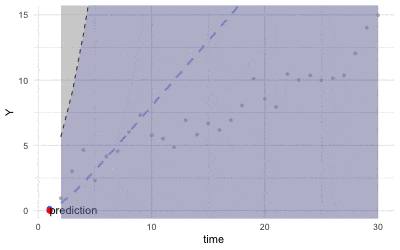
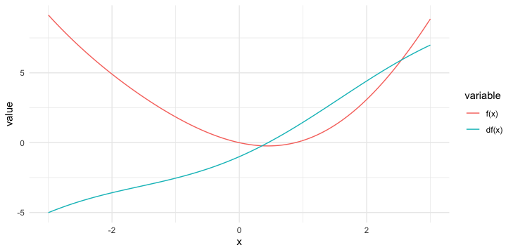
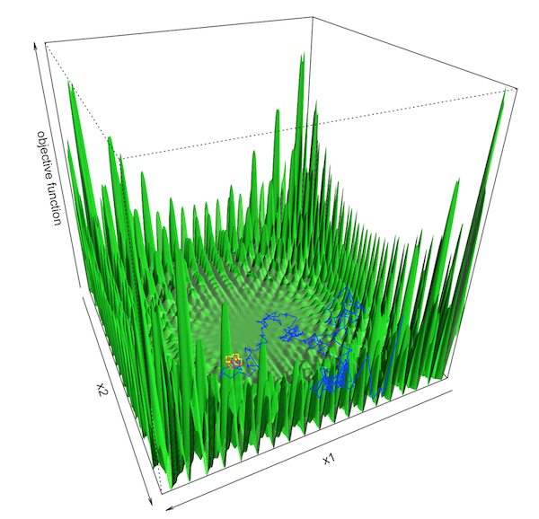
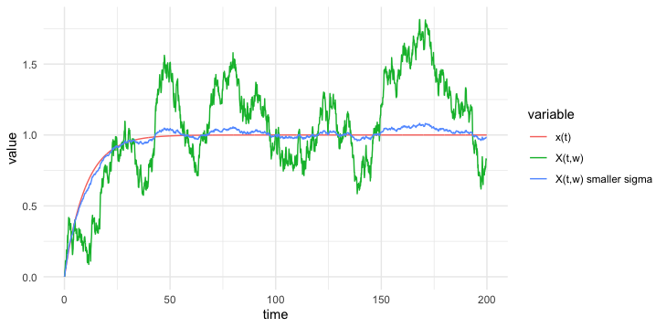
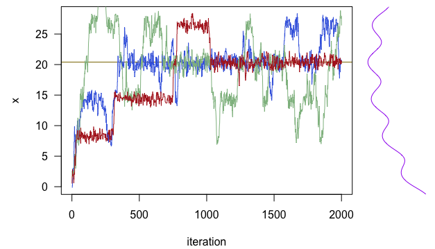

16 Randomization
Plato, in his work the Republic, describes a cave in which the residents are chained to a wall so they can’t see the real world; the best they can perceive are shadows reflected on the wall of the cave by some light outside. The residents have to make up their own interpretations of the outside world according to these shadows. All residents lack the omniscient knowledge of the real world, so they perceive the world differently based upon what is going on inside their minds and their “mental” projections of the shadows. That’s to say, facing the same situation, different people may consciously react differently; the different actions consecutively create different life paths. An observer from outside may find the evolutions of these paths somehow random.
The randomness emerges when the residents construct various elaborate ideas towards what reality is. The variety of these elaborate “mental” projections breaks down the unitarity and generates random outcomes. Such a construction is called randomization, a process of endowing unpredictable patterns to the events.422 Randomization is particularly important in designing a game. Nobody wants to play a deterministic scissors-paper-stone game. This game is interesting because of the random feature - no one knows the opponent’s action. Similarly, suppose that many residents are characters immersing inside some kind of giant, massively “game platform” that is so well rendered that none of them can detect the artificiality; the way of keeping the game continue, I guess, is to create enough randomness to prevent awakening the players. (Although attributing few random events a “non-random” feature to some players would make the game more “addictive,” this trick is non-applicable to all the events and all the players.)
16.1 Randomized Hilbert Space
One way to think about randomization is to consider the physical process of heating the crystals. The cooling crystals of a solid locate statically on some perfect lattice. During the heating process, the free energy accumulates so that the solid begins to melt, and the previous static crystals start to move randomly.423 The inverse of this physical process, namely cooling down a melting solid, is called annealing.
 Figure 16.1: Heating the particles
Figure 16.1: Heating the particles
In a technical sense, if we restrict our attention to some objects in a Hilbert space, \(\mathcal{H}\), we can define the randomization as mapping these objects into a Hilbert space associated with a certain probability space.
- \(L_{2}(\Omega,\mathcal{F},\mathbb{P};\mathcal{H})\)-space, and mean square completeness : Let \((\Omega,\mathcal{F},\mathbb{P})\) be a probability space, and let \(\mathcal{H}\) be a (non-random) Hilbert space with the inner product \(\left\langle \cdot,\cdot\right\rangle\). The randomization of this Hilbert space on \((\Omega,\mathcal{F},\mathbb{P})\) gives some measurable maps \(X(\omega):\Omega\rightarrow\mathcal{H}\), \(Y(\omega):\Omega\rightarrow\mathcal{H}\), and the \(\mathbb{P}\)-inner product \(\left\langle \cdot,\cdot\right\rangle _{\mathbb{P}}\) such that: \[\left\langle X(\omega),Y(\omega)\right\rangle _{\mathbb{P}}=\int\left\langle X(\omega),Y(\omega)\right\rangle \mathbb{P}(\mbox{d}\omega)=\mathbb{E}\left[\left\langle X(\omega),Y(\omega)\right\rangle \right].\] In particular, any random element \(X(\omega)\) in this randomized Hilbert space has the finite second moment, e.g., \[\mathbb{E}\left[\left\langle X(\omega),X(\omega)\right\rangle \right]^{2}=\mathbb{E}[\|X(\omega)\|^{2}]<\infty.\] These random elements are known as mean-square integrable \(\mathcal{H}\)-value random variables. The space is denoted by \(L_{2}(\Omega,\mathcal{F},\mathbb{P};\mathcal{H})\). A sequence \(\{X_{n}(\omega)\}_{n\in\mathbb{N}}\) of the \(\mathcal{H}\)-valued random variables is said to converge to \(X(\omega)\) in mean square if \[\lim_{n\rightarrow\infty}\mathbb{E}\left[\left|X_{n}(\omega)-X(\omega)\right|^{2}\right]=0\] with \(\mathbb{E}[|X_{n}(\omega)|^{2}]<\infty\) for all \(n\). The \(L_{2}(\Omega,\mathcal{F},\mathbb{P};\mathcal{H})\) space is complete with respect to the mean square.424 Recall that the Hilbert space is complete with respect to the \(L_{2}\)-norm.
Here are three examples of the \(L_{2}(\Omega,\mathcal{F},\mathbb{P};\mathcal{H})\) space. First, suppose that the Hilbert space \(\mathcal{H}\) is just a real-valued vector space in the finite dimension, i.e., \(\mathcal{H}=\mathbb{R}^{n}\), the \(\mathcal{H}\)-valued random variables are standard random vectors, i.e., \[\begin{align*}\mathbf{\mathbf{X}}(\omega)=\left[\begin{array}{c} X_{1}(\omega)\\ \vdots\\ X_{n}(\omega) \end{array}\right]&,\: \mathbf{\mathbf{Y}}(\omega)=\left[\begin{array}{c} Y_{1}(\omega)\\ \vdots\\ Y_{n}(\omega) \end{array}\right],\\ \left\langle \mathbf{X}(\omega),\mathbf{Y}(\omega)\right\rangle _{\mathbb{P}}=&\mathbb{E}\left[\sum_{i=1}^{n}X_i(\omega)Y_i(\omega)\right],\end{align*}\] where the \(\mathbb{P}\)-inner product \(\left\langle \mathbf{X}(\omega),\mathbf{Y}(\omega)\right\rangle _{\mathbb{P}}\) can also be written as \[\left\langle \mathbf{X}(\omega),\mathbf{Y}(\omega)\right\rangle _{\mathbb{P}} = \int_{\mathbb{R}^{n}}\int_{\mathbb{R}^{n}}\langle \mathbf{x},\mathbf{y}\rangle p(\mathbf{x},\mathbf{y})\mbox{d}\mathbf{x}\mbox{d}\mathbf{y}=\int\int (\mathbf{x}^\top\mathbf{y} p(\mathbf{x},\mathbf{y}))\mbox{d}\mathbf{x}\mbox{d}\mathbf{y},\] where \(p(\cdot,\cdot)\) is the joint probability density function of \(\mathbf{x},\mathbf{y}\in\mathbb{R}^{n}\).425 If we assume that the set \(\Omega\) in the probability space \((\Omega, \mathcal{F}, \mathbf{P})\) only contains discrete states, the \(\mathbb{P}\)-inner product becomes \[\begin{align*}\left\langle \mathbf{X}(\omega),\mathbf{Y}(\omega)\right\rangle _{\mathbb{P}}&= \mathbb{E}[X(\omega)Y(\omega)]\\&=\sum_{i=1}^{n}x_{i}y_{i}p(x_{i},y_{i}).\end{align*}\]
Second, suppose that the Hilbert space \(\mathcal{H}\) is an infinite-dimensional space of real-valued functions on the domain \(t\in[0,T]\), i.e., \(\mathcal{H}=L_2[0,T]\), then the \(\mathcal{H}\)-valued random variables are stochastic processes, i.e., \(X(t,\omega)\) and \(Y(t,\omega)\). Informally, we can think to extend the previous example to the infinite dimension.426 A stochastic processes \(X(t,\omega)\) can be thought of as a collection of infinite many random variables at infinite time points \(t_1, t_2,\dots\). So we have an infinite-length vector \(X_{t_1}(\omega),\dots X_{t_n}(\omega)\dots\). Also, the probability space of the \(L_{2}(\Omega,\mathcal{F},\mathbb{P};\mathcal{H})\)-space is a filtered space \((\Omega,\mathcal{F},\{\mathcal{F}_{t}\}_{t>0},\mathbb{P})\) where \(\mathcal{F}_1\) is for \(X_{t_1}\), etc. That is, given a fixed \(\omega\in\Omega\) (the sample path), the \(\mathcal{H}\)-valued \(\{X(\cdot,\omega):t\in[0,T]\}\) is a deterministic function, say \(X(\cdot,\omega):[0,t]\rightarrow L_{2}[0,T]\). The \(\mathbb{P}\)-inner product of these stochastic processes is given by \[\begin{align*}& \left\langle X(t,\omega),Y(t,\omega)\right\rangle _{\mathbb{P}}=\int\int X(s,\omega)Y(s,\omega)\mbox{d}s\mathbb{P}(\mbox{d}\omega)\\&=\mathbb{E}\left[\left\langle X(s,\omega),Y(s,\omega)\right\rangle \right]=\mathbb{E}\left[\int_{0}^{t}X(s,\omega)Y(s,\omega)\mbox{d}s\right].\end{align*}\]
Third, one fundamental subspace in \(L_{2}(\Omega,\mathcal{F},\mathbb{P};\mathcal{H})\)-space is the Gaussian Hilbert space, a complete space consisting of zero-mean Gaussian random variables from the probability space \((\Omega,\mathcal{F},\mathcal{N})\) where \(\mathcal{N}\) stands for the Gaussian probability law. For example, for any \(n\) independent identical \(\varepsilon_i \sim \mathcal{N}(0,\sigma^2)\), the span of these Gaussian random variables \[\mbox{span}\left\{\sum_{i=1}^{n} c_i\varepsilon_i\,:\, \sum_{i=1}^n|c_i|^2\leq \infty\right\}\] is a Gaussian Hilbert space.
In the \(L_{2}(\Omega,\mathcal{F},\mathbb{P};\mathcal{H})\)-space, we can formalize the randomness for infinite-dimensional objects. One example is to randomize the (deterministic) dynamics. Consider the following differential equation \[\frac{\mbox{d}x(t)}{\mbox{d}t} =f(x(t)), \,\, \mbox{with } x(0) =x_{0}.\] If the solution of the system exists, say \(x(t)\in\mathcal{H}\), it must be a function \(x(\cdot):[0,T]\rightarrow\mathbb{R}\).427 Suppose the function \(f(\cdot)\) is Lipschitz continuous; the solution exists and is unique. Randomization is to parameterize the function \(f(\cdot)\) by a random variable \(\varepsilon_{t}\) at time \(t\) with \(\mathbb{E}[|\varepsilon_t|^2]\leq\infty\). The system then becomes \[ \frac{\mbox{d}X(t,\omega)}{\mbox{d}t} =f\left(X(t,\omega),\varepsilon_t\right),\,\, \mbox{with } X(0,\omega) =X_{0},\] whose solution, if it exists, is a stochastic process \[X(\cdot,\cdot):[0,T]\times(\Omega,\mathcal{F},\{\mathcal{F}_{t}\}_{t\in[0,T]},\mathbb{P})\rightarrow\mathbb{R}.\] Given \(\omega\), the deterministic function \(X(\cdot,\omega)\) is an \(\mathcal{H}\)-valued element.
The above differentiation notation of the stochastic process \(X(t,\omega)\) may look awkward because the stochastic processes often have zigzags and because we have seen the “non-differentiability” natural of zigzags in chapter 7.2. The fact is that the differentiation \(\mbox{d}X(t,\omega)/\mbox{d}t\) refers to a “differentiation” in the mean square sense. For the \(L_{2}(\Omega,\mathcal{F},\mathbb{P};\mathcal{H})\)-space’s processes, we can introduce this new differentiation by some standard calculus conditions on the means and the covariances.428 Notice that for a \(L_{2}(\Omega,\mathcal{F},\mathbb{P};\mathcal{H})\)-space stochastic process, the first- and second-order densities (if they exist) can answer most (if not all) important probabilistic questions about the process. In other words, all the probability laws of the process are given by the first- and second-order densities. So it would be quite straightforward to consider the parameters associated with these densities, namely the means and the covariance.
One can define an equivalence class of stochastic processes having prescribed first and second-order moments. This class is normally labeled as the second-order process. Let \(\{X(t,\omega)\}_{t\in\mathbb{R}^{+}}\) be a stochastic process and let \(\{X_t(\omega)\}_{t\in\mathbb{N}}\) be a time series.
- Mean value function of the process or the time series: \[\mu_X(t) =\mathbb{E}[X(t,\omega)] = \mathbb{E}[X_t(\omega)].\]
- (Auto)-covariance function of the process or the time series: \[\begin{align*}\mbox{Cov}_X (t,s) &=\mathbb{E}\left[(X(t,\omega)- \mu_{X}(t))(X(s,\omega)- \mu_{X}(s))\right], \\&=\mathbb{E}[X(t,\omega)X(s,\omega)]- \mu_{X}(t)\mu_{X}(s); \end{align*}\]
Many interesting models can be characterized by the mean and covariance functions.
For example, consider the AR(1) model \(X_{t+1}=\phi X_{t}+\varepsilon_{t}\) where \(\varepsilon_{t}\sim\mathcal{N}(0,\sigma_{\epsilon}^{2})\) is independent of \(X_t\). The mean and covariance functions follow the dynamic law:429 The law comes from
\[\begin{align*}
\mu_{X}(t+1)&=\mathbb{E}[X_{t+1}]\\&=\mathbb{E}[\phi X_{t}+\varepsilon_{t}]\\
&=\phi\mu_{X}(t)\\
\mbox{Cov}_{X}(t+1,t) &=\mbox{Cov}(X_{t+1},X_{t})\\
&=\mbox{Cov}(\phi X_{t}+\epsilon_{t},X_{t})
\\&=\phi\mbox{Cov}(X_{t},X_{t})+\mbox{Cov}(\epsilon_{t},X_{t})
\\&=\phi\mbox{Cov}_{X}(t,t)\end{align*}\]
Sometimes people are interested in AR models with invariant variances, namely \[\mbox{Var}(X_t(\omega))=\cdots=\mbox{Var}(X_1(\omega))=\sigma^2.\]
Then there is
\[\sigma^{2} = \phi^{2} \sigma^{2} + \sigma_{\epsilon}^{2}\] which implies \(\sigma=\sigma_{\epsilon}^{2}/(1-\phi)\). Thus the covariance function of this AR(1) model can be simplified into \[\mbox{Cov}_{X}(t+1,t)=\frac{\sigma_{\epsilon}^{2}\phi}{1-\phi}.\]
\[\mu_{X}(t+1)=\phi\mu_{X}(t),\,\,\mbox{Cov}_{X}(t+1,t)=\phi\mbox{Cov}_{X}(t,t).\]
Another essential sub-class of the second-order processes is the Gaussian process, whose probability law is uniquely determined by the following specification \[X(\cdot,\omega)\sim \mathcal{N}(\mu_X(\cdot),\mbox{Cov}_X(\cdot,\cdot)).\] To understand the above specification, let’s consider a real-valued random vector \(\mathbf{X}(\omega)\in\mathbb{R}^{n}\) with Gaussian distribution \(\mathbf{X}(\omega)\sim \mathcal{N}(\mathbf{\mu},\Sigma)\). The first-order information is given by the mean vector \(\mathbb{E}[\mathbf{X}(\omega)]=\mathbf{\mu}\); the finite second-order information is contained in the covariance matrix \(\mbox{Var}(\mathbf{X}(\omega))=\Sigma\). Now let’s turn to a Gaussian process \(X(t,\omega)\in\mathbb{R}\) with mean function \(\mu_X(\cdot)\) and \(\mbox{Cov}_X(\cdot,\cdot)\). If we visualize the process at any \(n\) time points \((t_1,\dots,t_n)\), then the process looks like a random vector of the time series \(X_{t_1}(\omega),\dots,X_{t_n}(\omega)\): \[\underset{\mathbf{X}(\omega)}{\underbrace{\left[\begin{array}{c} X(t_{1},\omega)\\ \vdots\\ X(t_{n},\omega) \end{array}\right]}}\sim\mathcal{N}\left(\underset{\mathbf{\mu}}{\underbrace{\left[\begin{array}{c} \mu_{X}(t_{1})\\ \vdots\\ \mu_{X}(t_{n}) \end{array}\right]}},\underset{\Sigma}{\underbrace{\left[\begin{array}{ccc} \mbox{Cov}_{X}(t_{1},t_{1}) & \cdots & \mbox{Cov}_{X}(t_{1},t_{n})\\ \vdots & \ddots & \vdots\\ \mbox{Cov}_{X}(t_{n},t_{1}) & \cdots & \mbox{Cov}_{X}(t_{n},t_{n}) \end{array}\right]}}\right).\] Extending this \(n\)-length random vector to infinity, we are supposed to have the Gaussian process:430 The discretization of a continuous time Gaussian process has an interesting implication. The covariance matrices as the positive (semi)-definite matrices may have their corresponding underlying functions. Moreover, these functions may also have corresponding underlying operators (the functions’ infinite-dimensional counterparts). In practice, the discretized Gaussian process’s covariance matrices come from some “kernels” or called “positive operators.” We will come back to these concepts in sec[?]. \[X(\cdot,\omega)\sim \mathcal{N}(\mu_X(\cdot),\mbox{Cov}_X(\cdot,\cdot)).\]
 Figure 16.2: Gaussian processes with zero mean
Figure 16.2: Gaussian processes with zero mean
 Figure 16.3: The corresponding covariance matrces
Figure 16.3: The corresponding covariance matrces
Simulation of Gaussian processes
Now, we come back to the discussion of the differentiation issue for the stochastic process \(X(t,\omega)\). The issue is resolvable with defining a meaningful calculus towards the randomness. The following definition gives the mean square calculus for the processes in \(L_{2}(\Omega,\mathcal{F},\mathbb{P};\mathcal{H})\)-space.
Mean square continuity: When \[\lim_{h\rightarrow0}\mathbb{E}\left[\left|X(t+h, \omega)-X(t, \omega)\right|^{2}\right]=0,\] the random variable \(X(t,\omega)\) is mean square continous at \(t\).
Mean square differentiability : When the second order derivative \[\frac{\partial^{2}\mathbb{E}[X(t,\omega)X(s,\omega)]}{\partial t\partial s}\] exists for any \(t,s \in [a,b]\), \(X(t,\omega)\) is mean square differentiable such that \[\lim_{h\rightarrow0}\mathbb{E}\left[\left|\frac{X(t+h,\omega)-X(t,\omega)}{h}-\frac{\mbox{d}X(t,\omega)}{\mbox{d}t}\right|^{2}\right]=0.\]
Mean square integrability : When the (Riemann) integral \[\int_{a}^{b}\int_{a}^{b}\mathbb{E}[X(t,\omega)X(s,\omega)]\mbox{d}t\mbox{d}s\] is well defined over the interval \([a,b]\), then \(X(t,\omega)\) is mean square integrable over \([a,b]\) with the mean square integral \(\int_{a}^{b} X(t,\omega) \mbox{d}t\).431 Here is a more formal definition of the mean square integral. For an interval \([a,b]\), we make a partition \(a=t_{0}<t_{1}<\cdots<t_{n}=b\) and let \(\kappa=\max_{i}(t_{i+1}-t_{i})\), \(t_{i}\leq m_{i}\leq t_{i+1}\). The mean square integral of \(X(t,\omega)\) is given by the mean square limit of \(\sum_{i=0}^{n-1}X_{m_{i}}(\omega)(t_{i+1}-t_{i})\) that is \[\begin{align*}\lim_{\kappa\rightarrow0, n\rightarrow\infty}\mathbb{E}\left[\left|\sum_{i=0}^{n-1}X_{m_{i}}(\omega)(t_{i+1}-t_{i})-\\ \int_{a}^{b}X(t,\omega)\mbox{d}t\right|^{2}\right]=0.\end{align*}\]
Fundamental theorem of mean square calculus : \[\Pr\left\{ \left|X(t,\omega)-X(a,\omega)=\int_{a}^{t}\left(\frac{\mbox{d}X(\tau,\omega)}{\mbox{d}\tau}\right)\mbox{d}\tau\right|\right\} =1.\]
The term \(\mathbb{E}[X(t,\omega)X(s,\omega)]\) connects to the mean square criterion: \[\begin{align*}\mathbb{E}\left[\left|X(t+h)-X(t)\right|^{2}\right]&=\mathbb{E}\left[X(t+h)X(t+h)\right]-\mathbb{E}\left[X(t+h)X(t)\right]\\ &-\mathbb{E}\left[X(t)X(t+h)\right]+\mathbb{E}\left[X(t)X(t)\right].\end{align*}\] That is to say, the mean square continuity is all about continuity of \(\mathbb{E}[X(t,\omega)X(s,\omega)]\) for any \(t,s\). In addition, both mean square differentiability and integrability relate to the calculus of \(\mathbb{E}[X(t,\omega)X(s,\omega)]\).432 To have a vague idea about this relationship, recall that the definitions of differentiation and integration are both based on the continuity of some criteria of infinitesimal changes. Thus, the mean square differentiability and integrability must be based on the continuity of some mean square criteria of infinitesimal changes. As these mean square criteria all relate to the terms of \(\mathbb{E}[X(t,\omega)X(s,\omega)]\), we can see that the essence of defining mean square differentiability and integrability is to define the differentiability and integrability of \(\mathbb{E}[X(t,\omega)X(s,\omega)]\) for any \(t,s\). By the equality \[\mathbb{E}[X(t,\omega)X(s,\omega)]=\mbox{Cov}_X (t,s)+\mu_{X}(t)\mu_{X}(s),\] one can induce that the mean square continuity, differentiability, and integrability actually relate to the continuity and the calculus of mean and covariance functions.
Some remark about the mean square criterion
With the mean square calculus, we can define a white noise process, a baseline of modeling unpredictable fluctuation in the second-order processes. (See figure 16.2.)
Let \(\varepsilon(t,\omega)\) denote the white noise. The process has zero mean function and its covariance function is \[\mbox{Cov}_{\varepsilon}(t,s)=\sigma^{2}\delta(t-s)\] where \(\delta(\cdot)\) is called the delta function such that \[\begin{align*}\delta(x)=\begin{cases} \infty, & x=0,\\ 0, & x\neq0, \end{cases} & \; \mbox{ and }\\ \int_{-\infty}^{\infty}\delta(x)\mbox{d}x=1,& \,\, \int_{-\infty}^{\infty}f(x)\delta(x)\mbox{d}x=f(0) \end{align*}\] for any continuous function \(f(\cdot)\). Basically, a delta function is an infinite “spike” above a single point.433 One can shift the origin to any point \(t\) by setting the argument to \(x-t\) such that \[\delta(x-t)=\begin{cases} \infty, & x=t,\\ 0, & x\neq t. \end{cases}\] The delta function can be thought of as the derivative of the step function \(\mathbf{1}_{\{x>0\}}(x)\) that has zero everywhere and goes to infinity at \(0\).434 Note that for any \(\epsilon>0\), the derivative of the step function is \[\begin{align*} &\lim_{\epsilon\rightarrow0}\frac{\mathbf{1}_{\{x>0\}}(x+\epsilon)-\mathbf{1}_{\{x>0\}}(x)}{\epsilon}=\\ &\begin{cases} \lim_{\epsilon\rightarrow0}\frac{1}{\epsilon}\rightarrow\infty & x=0\\ \lim_{\epsilon\rightarrow0}\frac{0}{\epsilon}\rightarrow 0 & x\neq 0 \end{cases}.\end{align*}\]
For a white noise process, if the probability law in the \(L_{2}(\Omega,\mathcal{F},\mathbb{P};\mathcal{H})\)-space is Gaussian, then the white noise is called Gaussian white noise,435 Notice that the inner product \(\langle f,\delta \rangle=f(0)\) is well-defined. So the delta function is somehow similar to the indicator function at the origin as \[\int_{-\infty}^{\infty}f(x)\mathbf{1}_{\{x=0\}}(x)\mbox{d}x=f(0).\] In practice, one implements \(\mathbf{1}_{\{x=t\}}(x)\) instead of \(\delta(x-t)\) as a (numerical) delta function, because the infinite value of the delta function is impossible for the implementation. \[\varepsilon(t,\omega)\sim\mathcal{N}(0,\sigma^{2}\delta(x-t)).\]
The Gaussian white noise \(\varepsilon(t,\omega)\) corresponds to the mean square derivative of a Brownian motion \(X(t,\omega)\): \[\varepsilon(t,\omega)=\frac{\mbox{d}X(t,\omega)}{\mbox{d}t}.\] To see the connection, we analyze the mean and covariance functions of both processes. The mean functions of both white noise and Brownian motion are zero. So the mean square derivative does not change anything for the mean. The covariance function of the Brownian motion is \(\mbox{Cov}_{X}(t,s)=\sigma^{2}\min(t,s)\). According to the mean square differentiability, we should check the second derivative of this function, and we can see it equals to the covariance function of the white noise436 Note that\[\min(t,s)=\begin{cases} s, & s<t\\ t, & s>t \end{cases},\\ \frac{\partial\min(t,s)}{\partial t}=\mathbf{1}_{\{s>t\}}(s)=\begin{cases} 0, & s<t\\ 1, & s>t \end{cases}.\] That is, the first derivative of \(\min(t,s)\) is the step function \(\mathbf{1}_{\{s>t\}}(s)\). As we know, the derivative of a step function is the delta function. The result follows. \[\mbox{Cov}_{\varepsilon}(t,s)=\frac{\partial^{2}\mbox{Cov}_{B}(t,s)}{\partial t\partial s}=\sigma^{2}\frac{\partial^{2}\min(t,s)}{\partial t\partial s}=\sigma^{2}\delta(t-s).\] Thus, we have the result that the mean square differentiation of a Brownian motion is a white noise process.437 The discretization of the covariance functions of Brownian motion and white noise can be found in figure 16.3.
Conversely, if we consider \(\int_{s}^{t}\varepsilon(\tau,\omega)\mbox{d}\tau\) to be a “proper” integral, by the fundamental theorem of mean square calculus, we expect to have \[\int_{s}^{t}\varepsilon(\tau,\omega)\mbox{d}\tau=X(t,\omega)-X(s,\omega)\mbox{ with probability }1,\] where \(X(t,\omega)-X(s,\omega)\) is also called the increment of Brownian motion.438 The “integral” \(\int_{s}^{t}\varepsilon(\tau,\omega)\mbox{d}\tau\), however, is not technically well defined over here. A precise definition of the integral is not trivial, because some quantities that are finite sums in the finite discrete case must be replaced by integrals that may not converge in the mean square sense. Thus, instead of dealing with the rigorous definition, here we only consider a vague presentation of the result. The covariance function of the increment of Brownian motion \(X(t,\omega)-X(s,\omega)\) follows the probability law \(\mathcal{N}(0,(t-s)\sigma^{2})\), which is what we expect to see on the “integral” of the white noise process.439 The fact is that Brownian motion is a mathematically tractable version of the idea of the random walk in the continuous time setting. Intuitively, one can think of random walks \(X_{s}=\varepsilon_{1}+\cdots+\varepsilon_{s}\) and \(X_{t}=\varepsilon_{1}+\cdots+\varepsilon_{t}\). Then \[X_{t}-X_{s}=\underset{(t-s)-\mbox{entities}}{\underbrace{\varepsilon_{t}+\varepsilon_{t-1}+\cdots+\varepsilon_{s}}}.\] For each \(\varepsilon_{i}\sim\mathcal{N}(0,\sigma^{2})\), the Gaussian property tells that \[\sum_{i=s}^{t}\varepsilon_{i}\sim\mathcal{N}(0,(t-s)\sigma^{2}).\]
16.2 Direct Sums and Decompositions
When we compare the representation of a random walk \(X_{t}(\omega)\in\mathbb{R}\) and that of a vector \(\mathbf{x}\in\mathbb{R}^{t}\), we can find some interesting similarities: \[\begin{align*}X_{t}(\omega) &= \varepsilon_{1}(\omega)+\cdots+\varepsilon_{t}(\omega), \, \varepsilon_{i} \sim \mathcal{N}(0,1), \\ \left\langle \varepsilon_{i}(\omega),\varepsilon_{j}(\omega)\right\rangle _{\mathbb{P}}&=\mathbb{E}\left[\left\langle \varepsilon_{i}(\omega),\varepsilon_{j}(\omega)\right\rangle \right] =\begin{cases} 0, & i\neq j\\ 1, & i=j \end{cases},\\ \mathbf{x} &= c_{1}\mathbf{e}_{1}+\cdots+c_{n}\mathbf{e}_{t},\\ \left\langle \mathbf{e}_{i},\mathbf{e}_{j}\right\rangle &=\begin{cases} 0, & i\neq j\\ 1, & i=j \end{cases}.\end{align*}\] The (discrete time) Gaussian white noise \(\varepsilon_i(\omega)\) with unit variance looks like a “whitened” unit vector \(\mathbf{e}_i\). Moreover, the collection of white noises seems to play the same role as the orthonormal basis to the random walk \(X_{t}(\omega)\) in a \(L_{2}(\Omega,\mathcal{F},\mathbb{P};\mathcal{H})\)-space.
Given this result, a natural question is to ask whether we can represent any second-order \(\mathcal{H}\)-valued time series or stochastic process in terms of white noises? If this is the case, then we can think the randomization of the \(L_{2}(\Omega,\mathcal{F},\mathbb{P};\mathcal{H})\)-space is about randomizing the Hilbert space \(\mathcal{H}\) through “whitening” the basis of \(\mathcal{H}\).
The route of our exposition will start with defining how to construct a space by many subspaces; then we will study the subspaces generated by white noises and will see what kind of processes can live in the “combination” of those subspaces. The switch of the focus from white noises to the space of white noises will help us to bridge the difference between the representations of the stochastic objects and of the deterministic ones.
Now we start with introducing the way of “combining” the subspaces.
- Direct sums, decompositions and complements : Consider two vector spaces \(\mathcal{V}_{1}\) and \(\mathcal{V}_{2}\) over the same scalar field \(\mathbb{F}\). When the two spaces can be combined to form a new vector space \(\mathcal{V}\), then \(\mathcal{V}\) is called the direct sum of \(\mathcal{V}_{1}\) and \(\mathcal{V}_{2}\), denoted by \[\mathcal{V}=\mathcal{V}_{1}+\mathcal{V}_{2}.\] If \(\mathcal{V}\) is the direct sum of \(\mathcal{V}_{1}\) and \(\mathcal{V}_{2}\), then all objects in \(\mathcal{V}\) can be decompose into those from \(\mathcal{V}_{1}\) and \(\mathcal{V}_{2}\) such that for any \(f\in\mathcal{V}\), there is \(f=f_{1}+f_{2}\) where \(f_{1}\in\mathcal{V}_{1}\) and \(f_{2}\in\mathcal{V}_{2}\), and we say \(\mathcal{V}_1\) and \(\mathcal{V}_2\) are complements of each other. In addition, if \(\mathcal{V}_{1}\) and \(\mathcal{V}_{2}\) are Hilbert spaces, and they are disjoint440 The disjoint property tells that the direct sum can be uniquely decomposed. The proof is given below. and orthogonal441 The orthogonality of the subspaces \(\mathcal{V}_1 \bot \mathcal{V}_2\) are defined as \[\langle f,g\rangle=0\] for all \(f\in\mathcal{V}_1\) and \(g\in\mathcal{V}_2\)., we say \(\mathcal{V}\) is the orthogonal direct sum of \(\mathcal{V}_{1}\) and \(\mathcal{V}_{2}\), denoted by \[\mathcal{V}=\mathcal{V}_{1}\oplus\mathcal{V}_{2},\] where \(\mathcal{V}_{1}\) and \(\mathcal{V}_{2}\) are orthogonal complements of one another.442 The orthogonal complement of \(\mathcal{V}_1\subset\mathcal{V}\) is denoted by \(\mathcal{V}_1^{\bot}\). If \(\mathcal{V}=\mathcal{V}_{1}\oplus\mathcal{V}_{2}\), then \(\mathcal{V}_2 = \mathcal{V}_1^{\bot}\).
Proof
Let’s consider three examples of “summing” the subspaces or “decomposing” a space.
Range space and null space
For a non-square matrix \(\mathbf{A}\in\mathbb{F}^{n\times m}\), the column space (or called range space when we consider the operator rather than the matrix) of \(\mathbf{A}\) is defined by:443 Notice that the column/range space \(\mbox{Range}(\mathbf{A})\) is the image of the linear transformation \(\mathbf{A}\). \[\mbox{Range}(\mathbf{A}):=\left\{ \mathbf{y}\in\mathbb{F}^{n}:\,\mathbf{y}=\mathbf{A}\mathbf{x},\mathbf{x}\in\mathbb{F}^{m},\mathbf{A}\in\mathbb{F}^{n\times m}\right\}.\] The solution of the system \(\mathbf{b}=\mathbf{A}\mathbf{x}\) exists only if \(\mathbf{b}\) is in \(\mbox{Range}(\mathbf{A})\), i.e., \(\mathbf{b}\in\mbox{Range}(\mathbf{A})\). The column space \(\mbox{Range}(\mathbf{A})\) contains all the linear combinations of the columns of \(\mathbf{A}\). It is a subspace of \(\mathbb{F}^{n}\).
The null space is orthogonal to \(\mbox{Range}(\mathbf{A})\)444 To see the orthogonality, for any \(\mathbf{x}\in\mbox{Range}(\mathbf{A})\), there is \[\left\langle \mathbf{A}\mathbf{x},\,\mathbf{y}\right\rangle =\mathbf{x}^{\mbox{H}}\mathbf{A}^{\mbox{H}}\mathbf{y}=0\] for any \(\mathbf{y}\in\mbox{Null}(\mathbf{A}^{\mbox{H}})\). \[\mbox{Null}(\mathbf{A}^{\mbox{H}}):=\left\{ \mathbf{y}\in\mathbb{F}^{n}:\mathbf{A}^{\mbox{H}}\mathbf{y}=0,\,\mathbf{A}^{\mbox{H}}\in\mathbb{F}^{m\times n}\right\}\] The null space of \(\mathbf{A}^{\mbox{H}}\) consists of all solutions \(\mathbf{A}^{\mbox{H}}\mathbf{y}=0\), it is also a subspace of \(\mathbb{F}^{n}\).
The null space and column space are orthogonal complements such that: \[\mbox{Range}(\mathbf{A})\oplus\mbox{Null}(\mathbf{A}^{\mbox{H}})=\mathbb{F}^{n}.\] This result is a generalization of the Farkas’ lemma. Basically it reveals a dichotomy about the sandwich form \(\left\langle \mathbf{x},\,\mathbf{A}^{\mbox{H}}\mathbf{y}\right\rangle\) for a given system \(\mathbf{y}=\mathbf{A}\mathbf{x}\): either the sandwich form is zero or non-zero.445 That is, for any \(\mathbf{x},\mathbf{y}\in\mathbb{F}^{n}\), either \(\left\langle \mathbf{x},\,\mathbf{A}^{\mbox{H}}\mathbf{y}\right\rangle =0\) or \[\begin{align*}\left\langle \mathbf{x},\,\mathbf{A}^{\mbox{H}}\mathbf{y}\right\rangle &=\left\langle \mathbf{A}\mathbf{x},\,\mathbf{y}\right\rangle\\ &=\left\langle \mathbf{y},\,\mathbf{y}\right\rangle =\|\mathbf{y}\|^{2}\neq0.\end{align*}\] The dichotomy is also known as the Fredholm alternative.
Fredholm alternative
The complementary subspaces tell that the “dimension” of the column space is not only a property of \(\mbox{Range}(\mathbf{A})\) but also the property of \(\mbox{Null}(\mathbf{A}^{\mbox{H}})\).446 The dimension of the space refers to the cardinal number of the basis of that space. That is, if the “dimension” of \(\mbox{Range}(\mathbf{A})\) grows, then the “size” of \(\mbox{Null}(\mathbf{A}^{\mbox{H}})\) will shrink, and vice versa. In the \(L_{2}(\Omega,\mathcal{F},\mathbb{P};\mathcal{H})\)-space, the zero mean \(\mathcal{H}\)-valued random variables belong to the null space of a linear functional. It turns out that the size of this null space is only one dimensional lower than the (non-randomized) \(\mathcal{H}\).447 For a \(\mathcal{H}\)-valued random variable, its expectation can be thought of as a linear functional, \[\begin{align*}\mathbb{E}[X(\omega)]=\int_{\Omega}x\mathbb{P}(\mbox{d}x)\\=\int_{\Omega}xf(x)\mbox{d}x=\langle x,f\rangle\end{align*}\] where \(\mathbb{P}(\mbox{d}x)=f(x)\mbox{d}x\) for the density function \(f(\cdot)\). For a non-trivial linear functional \(\langle \cdot,f\rangle\), i.e., \(f\neq0\), the null space \[\mbox{Null}(f)=\{x\in\mathcal{H}:\langle x,f\rangle=0\}\] is a subspace of \(\mathcal{H}\). In fact, the space \(\mbox{Null}(f)\) is so large that it is the “maximal” subspace of \(\mathcal{H}\), i.e., one dimensional lower than \(\mathcal{H}\).
Remarks about the null space of a linear functional
Future and past space
Let’s look at another example. Consider a vector space linearly generated by \(\mathcal{H}\)-valued time series \(X_{t}(\omega)\) such that \[\mbox{span}\left\{ X_{t}(\omega)\right\} =\left\{ \sum_{t}\phi(t)X_{t}(\omega),\,\phi\in\mathcal{H} \right\}.\] By closing this space, i.e., adding all mean square limits of all sequences of \(\sum_{t}\phi(t)X_{t}(\omega)\), we will obtain a \(L_{2}(\Omega,\mathcal{F},\mathbb{P};\mathcal{H})\)-space generated by the series \(X_{t}(\omega)\), denoted by \[\mathcal{H}_{X(\omega)}=\overline{\mbox{span}}\left\{ \left.X_{t}(\omega)\right|t\in(-\infty,\infty)\right\},\] where \(\overline{\mbox{span}}\) says that the span is closed.448 The extension of the span to the continuous time requires more technicalities and is beyond our current concerns.
The space \(\mathcal{H}_{X(\omega)}\) can be decomposed into two subspaces of interests. They are representing the past and the future space generated by \(X_t(\omega)\) respectively:449 The convention is to include the present in the future only and not in the past. \[\mathcal{H}_{X(\omega)}^{t-}=\overline{\mbox{span}}\left\{ \left.X_{s}(\omega)\right|s<t\right\} ,\;\mathcal{H}_{X(\omega)}^{t+}=\overline{\mbox{span}}\left\{ \left.X_{s}(\omega)\right|s\geq t\right\}.\] Combing the past and the future gives us the whole space, namely \(\mathcal{H}_{X(\omega)}=\mathcal{H}_{X(\omega)}^{t-}+\mathcal{H}_{X(\omega)}^{t+}\). In particular, if the process \(X_t(\omega)\) is Markovian, then the future and the past are orthogonal given the present, which means given \(X_{t}(\omega)\),450 The orthogonality can be justified by the conditional expectation. We will discuss it in sec[?]. \[\mathcal{H}_{X(\omega)}=\mathcal{H}_{X(\omega)}^{t-}\oplus \mathcal{H}_{X(\omega)}^{t+}.\]
Decomposition by the projection
The third example is about decomposing the space by the projection operator. Let \(\mathbf{P}_{\mathcal{Y}}:\mathcal{H}\rightarrow \mathcal{Y}\) be the projection operator defined on the Hilbert space \(\mathcal{H}\), such that \(\mathbf{P}_{\mathcal{Y}}\mathbf{P}_{\mathcal{Y}}=\mathbf{P}_{\mathcal{Y}}\). By the property of the projection, it is straightforward to see that \(\mbox{Null}(\mathbf{P}_{\mathcal{Y}})\) and \(\mbox{Range}(\mathbf{P}_{\mathcal{Y}})\) are disjoint subspaces of \(\mathcal{H}\) such that \[\mathcal{H} = \mbox{Range}(\mathbf{P}_{\mathcal{Y}}) + \mbox{Null}(\mathbf{P}_{\mathcal{Y}})=\mathcal{Y} + \mbox{Null}(\mathbf{P}_{\mathcal{Y}}).\] In addition, if the projection is orthogonal, then \[\mathcal{H} = \mbox{Range}(\mathbf{P})_{\mathcal{Y}} \oplus \mbox{Null}(\mathbf{P}_{\mathcal{Y}})=\mathcal{Y} \oplus \mathcal{Y}^{\bot},\] and \(\|f\|^2 = \|f_1\|^2 +\|f_2\|^2\) for \(f\in \mathcal{H}\), \(f_1\in \mbox{Range}(\mathbf{P}_{\mathcal{Y}})\), \(f_2 \in \mbox{Null}(\mathbf{P}_{\mathcal{Y}})\).
In other words, one projection can uniquely decompose the Hilbert space into two disjoint subspaces. The range space of the projection operator is simply the target subspace (\(\mathcal{Y}\)) of the projection. Given a target space, there could be many projections. If we want the null space of the projection to be orthogonal to the range space, then we need the orthogonal projection. Because the decomposition is unique, we expect that for any target subspace, there is one and only one orthogonal projection.451 In fact, if \(\mathcal{A}\) is any closed subspace of a Hilbert space \(\mathcal{H}\). Then \(\mathcal{H}=\mathcal{A}\oplus\mathcal{A}^{\bot}\). The proof is given below.
Proof
Given the identical and independent property of the white noises, one should expect that the spaces of white noises share some invariant properties.
Recall that in the deterministic setting, stationarity refers to some equilibrium status, in which the dynamics remain invariant. The dynamics of the randomized models should be described by the probability laws. For Markov processes, we have seen the invariance probability law is about the unchange of transition probabilities. While for the second-order processes, since the probability law is reduced to the first- and the second-order information, we can have define a new kind of invariance in a wider sense, called the weak (or wide sense) stationarity.
- Weak (or wide sense) stationarity : A second-order process \(X(t,\omega)\) is weakly stationary if its covariance function satisfies \[\mbox{Cov}_X (s+t,s)= \mbox{Cov}_X (t,0),\] for any \(s,t\in\mathbb{R}\), and its mean function \(\mu_X(t) = \mu_X\) where \(\mu_X\) is a constant independent of time.
The above defintion of the covariance function says that only the difference between function’s two arguments matters, namely \[\mbox{Cov}_X (t_1,t_2)= \mbox{Cov}_X (t_1 - t_2).\]
Another way to understand the definition is to see that, for a weakly stationary process, if one shifts the process by \(s\)-unit of time, the first- and the second-order structures of the process remain invariant. Recall that shifting the process backward is conducted by the lagged operator \(\mathbf{L}\). For a weak stationary time series \(X(\omega)_{t}\), we have the following equalities in the \(L_{2}(\Omega,\mathcal{F},\mathbb{P};\mathcal{H})\)-space452 Note that the covariance function can be written in terms of an inner product in the \(L_{2}(\Omega,\mathcal{F},\mathbb{P};\mathcal{H})\)-space \[\begin{align*}\mathbb{E}[(X_{t}(\omega)-\mu_{X})(X_{t-1}(\omega)-\mu_{X})]\\=\langle X_{t}(\omega)-\mu_{X},X_{t-1}(\omega)-\mu_{X}\rangle_{\mathbb{P}}.\end{align*}\] For the lagged operator, \[\mathbf{L}(X_{t}(\omega) - \mu_{X})=X_{t-1}(\omega)-\mu_X\] because \(\mu_X\) is a constant independent of time.: \[\begin{align*}\mbox{Cov}_X (t,t-1) &= \langle X_{t}(\omega) - \mu_{X},X_{t-1}(\omega)-\mu_{X}\rangle_{\mathbb{P}} \\ &=\langle X_{t}(\omega) - \mu_{X},\mathbf{L}(X_{t}(\omega) - \mu_{X})\rangle_{\mathbb{P}}\\ &=\langle\mathbf{L}^{\mbox{H}}(X_{t}(\omega)-\mu_X),X_{t}(\omega)-\mu_X\rangle_{\mathbb{P}}\\ &=\langle X_{t+1}(\omega)-\mu_X,X_{t}(\omega)-\mu_{X}\rangle_{\mathbb{P}}\\ &= \mbox{Cov}_X (t+1,t) \end{align*}\] where \(\mathbf{L}^{\mbox{H}}\) is the adjoint operator of \(\mathbf{L}\), meaning a forward shift.
In other words, the weak stationarity is about endowing the lagged operator \(\mathbf{L}\) the unitary property, as the operators perserve the value of the \(\mathbb{P}\)-inner product (called isometry)453 By the equality \[\mbox{Cov}_X (t,s)= \mathbb{E}[X_t(\omega)X_s(\omega)] -\mu_{X}^2,\] we know that only the term \[\mathbb{E}[X_t(\omega)X_s(\omega)]=\langle X_{t}(\omega),X_{s}(\omega)\rangle_{\mathbb{P}}\] influences the covariance function. So we just need to consider \[\langle X_{t}(\omega),X_{t-1}(\omega)\rangle_{\mathbb{P}}=\langle X_{t+1}(\omega),X_{t}(\omega)\rangle_{\mathbb{P}}.\] \[\begin{align*}\langle\mathbf{L}X_{t+1}(\omega),\mathbf{L}X_{t}(\omega)\rangle_{\mathbb{P}}&=\langle X_{t}(\omega),X_{t-1}(\omega)\rangle_{\mathbb{P}}=\\\langle X_{t+1}(\omega),\mathbf{L}^{\mbox{H}}\mathbf{L}X_{t}(\omega)\rangle_{\mathbb{P}}&=\langle X_{t+1}(\omega),X_{t}(\omega)\rangle_{\mathbb{P}},\end{align*}\] and \(\mathbf{L}^{\mbox{H}}\mathbf{L}=\mathbf{I}\) or say \(\mathbf{L}^{\mbox{H}}=\mathbf{L}^{-1}\).
For an operator \(\mathbf{T}\), we say that the operator induces an invariant subspace \(\mathcal{V}\), if \(\mathbf{T}(\mathcal{V})\subset\mathcal{V}\). Therefore, the weak stationarity is to empower the lagged operator \(\mathbf{L}\) and its adjoint \(\mathbf{L}^{\mbox{H}}\) to induce the invariant subspaces of some \(L_{2}(\Omega,\mathcal{F},\mathbb{P};\mathcal{H})\)-space generated by the process \(X(t,\omega)\):454 The Hilbert space \(\mathcal{H}_{X(\omega)}\) generated by a weak stationary stochastic process \(X(t,\omega)\) is to be generated by the unitary lagged operator \(\mathbf{L}\) in the following sense: \[\mathcal{H}_{X(\omega)}=\overline{\mbox{span}}\{\mathbf{L}^{t}X(t,\omega)| t\in\mathbb{Z}\}.\] \[\mathbf{L}\mathcal{H}_{X(\omega)}^{t-}=\mathcal{H}_{X(\omega)}^{t-},\;\mathbf{L}^{\mbox{H}}\mathcal{H}_{X(\omega)}^{t+}=\mathcal{H}_{X(\omega)}^{t+},\] where \(\mathcal{H}_{X(\omega)}^{t-}\) and \(\mathcal{H}_{X(\omega)}^{t+}\) represent the past and the future respectively, and \(\mathcal{H}_{X(\omega)}= \mathcal{H}_{X(\omega)}^{t-}+\mathcal{H}_{X(\omega)}^{t+}\).
With the concepts of direct sum (decomposition) and weak stationarity, we can analyze the random walk model \(X_{t}(\omega)=\sum_{i=1}^{t}\varepsilon_{i}(\omega)\) from a different perspective. Let \(\mathcal{H}_{X(\omega)}^{t}\) and \(\mathcal{H}_{\varepsilon(\omega)}^{t}\) be the \(L_{2}(\Omega,\mathcal{F},\mathbb{P};\mathcal{H})\)-spaces generated by the \(X_t(\omega)\) and \(\varepsilon_t(\omega)\) at time \(t\). Because Gaussian white noises \(\{\varepsilon_{i}(\omega)\}_{i=1}^{t}\) are from disjoint orthogonal subspaces \(\mathcal{H}^{t}_{\varepsilon(\omega)},\dots,\mathcal{H}^{1}_{\varepsilon(\omega)}\), the direct sum \(\mathcal{H}_{X(\omega)}^{t}\) can be orthogonally decomposed as \[\begin{align*}\mathcal{H}_{X(\omega)}^{t}&=\mathcal{H}^{t}_{\varepsilon(\omega)}\oplus\mathcal{H}^{t-1}_{\varepsilon(\omega)}\cdots\oplus\mathcal{H}^{1}_{\varepsilon(\omega)} = \oplus_{s=1}^{t}\mathcal{H}^{s}_{\varepsilon(\omega)} \\&= \mathcal{H}^{t}_{\varepsilon(\omega)}\oplus\mathbf{L}\mathcal{H}_{X(\omega)}^{t}.\end{align*}\]
The subspace \(\mathcal{H}^{t}_{\varepsilon(\omega)}\), as the orthogonal complement of lagged \(\mathcal{H}_{X(\omega)}^{t}\), provides the gap information between \(\mathcal{H}_{X(\omega)}^{t}\) and its one step backward shifted \(\mathbf{L}\mathcal{H}_{X(\omega)}^{t}\). Such a subspace is called the wandering subspace if the shift/lagged operator induces invariant subspaces.
In short, the space the weakly stationary random walks is decomposed of the orthogonal direct sums of wandering subspaces generated by the white noises.455 The random walk is weakly stationary, as the covariance function \(\mbox{Cov}_X(t,s)=\sigma^2(t-s)\) only depend on the difference of its arguments. Thus, we can view the space of random walks as the direct sum of many subspaces generated by the white noises. The sequence \(\{\varepsilon_{i}\}_{i=1}^{t}\) is called the white noise basis of the random walk series.
This kind of the decomposition turns out to be valid for all weakly stationary processes with zero means in the \(L_{2}(\Omega,\mathcal{F},\mathbb{P};\mathcal{H})\)-space, even if the space consists of infinitely many wandering subspaces.456 The result is called the Wold’s decomposition. However, additional restrictions have to be imposed on the remote past and future subspaces of the processes. The remote past and future subspaces have to be trivial, namely \[\lim_{t\rightarrow\pm\infty}\mathcal{H}_{X(\omega)}^{t}=0,\] so that they provide zero information to all the other subspaces of the process. The Wold decomposition basically says that a unitary operator can induce a sequence of subspaces whose orthogonal direct sum is invariant under the operator.
By the definition of the subspace in chapter 11.4, we know that if some objects live in a subspace, any linear combination of these objects also belongs to this subspace. The collection of wandering subspaces induced by the white noise basis can be infinite dimensional. This motivates us to represent some infinite dimensional elements through a linear combination of infinite dimensional white noises basis (a linear functional of white noise process) in the \(L_{2}(\Omega,\mathcal{F},\mathbb{P};\mathcal{H})\)-spaces.457 The previous discussion says that the null space of a linear functional can be the “maximal” subspace. One may expect that the representation is good enough to approximate almost all second-order processes. This is roughly the case, except that the mean function (the “missing” one dimension) has to be removed from the approximation. So we only consider zero mean processes over here. Let \(\varepsilon(t,\omega)\) be a Gaussian white noise process. The linear functional \(f(\omega)\in\mathcal{H}_{f(\omega)}\) of the white noise process has the form \[f(\omega)=\sum_{s=-\infty}^{\infty}c(-s)\varepsilon(s,\omega),\;\mbox{where }\sum_{s=-\infty}^{\infty}|\phi(-s)|^{2}<\infty\] where the deterministic function \(c(-s)\) is in the \(\ell_2\)-space, and plays a role as the \(s\)-th Fourier coefficient of the functional \(f\) with respect to the white noise basis \(\varepsilon(s,\omega)\) such that \[c(-t)=\left\langle f(\omega),\varepsilon(t,\omega)\right\rangle _{\mathbb{P}}=\mathbb{E}\left[f(\omega)\varepsilon(t,\omega)\right].\] As you can see, the function \(c(\cdot)\) is analogous to the coefficient in the abstract Fourier series in chapter 14.3. Therefore, we expect that these coefficient functions are unique and form a square summable sequence.458 It is possible to derive the continuous version of this representation. But due to the difficulty of defining “proper” mean square integral of white noises, it is better to construct the functionals in terms of mean square differential of a Brownian motion \(B(t,\omega)\), i.e., \[f(\omega)=\int_{-\infty}^{\infty}c(-s)\mbox{d}B(t,\omega)\] where \(\mbox{d}B(t,\omega)=\varepsilon(t,\omega)\mbox{d}t\) according to the previous definition of the white nose.
Recall that given \(\omega\), a stochastic process \(X(t,\omega)\) is a function (path) over time \(t\).459 Given \(\omega\), \(X(\cdot, \omega):\mathcal{V}\rightarrow\mathbb{F}\) is a functional. It would be natural think about using the previous decomposition for representing a stochastic processes. Because all white noises have zero means, \(\mathbb{E}[\varepsilon(t,\omega)]=0\), the inner product of \(X(t,\omega)\) and \(\varepsilon(t,\omega)\) actually gives the covariance function.460 Note that
\[\begin{align*}\mbox{Cov}_{X,\varepsilon}(t,s)=&\\\mathbb{E}\left[X(t,\omega)\varepsilon(s,\omega)\right]-&\mathbb{E}[X(t,\omega)]\mathbb{E}[\varepsilon(s,\omega)]\\=&\left\langle X(t,\omega),\varepsilon(s,\omega)\right\rangle _{\mathbb{P}}.\end{align*}\]
So we have the following representation \[X(t,\omega)=\sum_{s=-\infty}^{\infty}\mbox{Cov}_{X,\varepsilon}(t,s)\varepsilon(s,\omega).\]
In particular, if the second order process \(X(t,\omega)\) is weakly stationary,
the duality between coefficient function \(c(s)=\mbox{Cov}_{X,\omega}(t,s)\) and the white noise basis becomes clear. Because when we shift the all the white noises by \(\tau\)-period backward, e.g., \(\varepsilon(s-\tau,\omega)=\mathbf{L}^{\tau}\varepsilon(s,\omega)\), the corresponding coefficient needs to be shifted \(\tau\)-period forward:
\[\begin{align*}
\mbox{Cov}_{X,\omega}(t,s-\tau)&=\left\langle X(t,\omega),\varepsilon(s-\tau)\right\rangle _{\mathbb{P}}=\left\langle X(t,\omega),\mathbf{L}^{\tau}\varepsilon(s)\right\rangle _{\mathbb{P}}\\
&=\left\langle \mathbf{L}^{-\tau}X(t,\omega),\varepsilon(s)\right\rangle _{\mathbb{P}}=\mbox{Cov}_{X,\omega}(t+\tau,s)\\
&=\mathbf{L}^{-\tau}c(s).
\end{align*}\]
Then the representation is simplified to461 This is the exact formula for the Wold decomposition of the weakly stationary process \(X(t,\omega)\).
\[X(t,\omega)=\sum_{s=-\infty}^{\infty}\mbox{Cov}_{X,\varepsilon}(t-s)\varepsilon(s,\omega)\] where the covariance function only has one argument.
16.3 Miscellaneous: Sample Average, Reduction Principle, and Kalman’s Filter
For the \(\mathcal{H}\)-valued random variables \(X(\omega)\) and \(Y(\omega)\) in the \(L_{2}(\Omega,\mathcal{F},\mathbb{P};\mathcal{H})\)-space, the \(\mathbb{P}\)-inner product \(\mathbb{E}[X(\omega)Y(\omega)]\) implies the \(\mathbb{P}\)-norm \(\|X(\omega)\|_{\mathbb{P}}=\sqrt{\mathbb{E}[X(\omega)]^{2}}\), and the mean square distance462 In particular, if both \(X(\omega)\) and \(Y(\omega)\) are mean zero random variables, the distance is simply the covariance between \(X(\omega)\) and \(Y(\omega)\). \[\begin{align*}\mbox{d}_{\mathbb{P}}(X(\omega),Y(\omega))&=\langle X(\omega)-Y(\omega), X(\omega)-Y(\omega) \rangle_{\mathbb{P}}\\ &=\mathbb{E}[X(\omega)-Y(\omega)]^{2}=\|X(\omega)-Y(\omega)\|^{2}_{\mathbb{P}}.\end{align*}\] With these definitions, we can derive the metric projection operator in the \(L_{2}(\Omega,\mathcal{F},\mathbb{P};\mathcal{H})\)-space, which is nothing else but the expectation operator.
Let’s illustrate the result by setting \(\mathcal{H}=\mathbb{R}\). According to the definition of the metric projection, the projection will map \(X(\omega)\in\mathbb{R}\) to a single value in \(\mathbb{R}\) that is the deterministic optimal approximation for the random variable \(X(\omega)\). Thus, the hat operator \(\hat{x}\) will minimize the mean square distance such that463 The hat operator \(\hat{(\cdot)}:\mathcal{H}_{X(\omega)}\rightarrow \mathbb{R}\) maps from the randomized Hilbert space generated by \(X(\omega)\) to \(\mathbb{R}\). So \(\hat{x}\) is a linear functional in \(\mathcal{H}_{X(\omega)}\). \[\begin{align*}\min_{c\in\mathbb{R}}\mbox{d}_{\mathbb{P}}(X,c)&=\min_{c\in\mathbb{R}}\mathbb{E}[X(\omega)-c]^{2}=\mathbb{E}[X(\omega)-\hat{x}]^{2}.\end{align*}\] Let \(\mu\) be the mean value of the random variable \(X(\omega)\). Note that \[\begin{align*}&\mathbb{E}[(X(\omega)-c)]^{2}=\mathbb{E}[(X(\omega)-\mu+\mu-c)]^{2}\\ =&\mathbb{E}\left[(X(\omega)-\mu)^{2}+(\mu-c)^{2}+2(X(\omega)-\mu)(\mu-c)\right]\\ =& \underset{=\mbox{Var}(X(\omega))}{\underbrace{\mathbb{E}[(X(\omega)-\mu)^{2}]}}+(\mu-c)^{2}+2(\mu-c)\underset{=0}{\underbrace{\mathbb{E}[(X(\omega)-\mu)]}}. \end{align*}\] The first term is the variance, so its value is the same regardless of the choice of \(c\). The minimization only depends on the second term that is clearly minimized by \(\hat{x}=\mu=\mathbb{E}[X(\omega)]\).464 In other words, we can also think of the linear operator \(\mathbb{E}[\cdot]\) of a random variable as the metric projector in \(L_{2}(\Omega,\mathcal{F},\mathbb{P};\mathbb{R})\): \[\mathbf{P}_{\mathcal{\mathbb{R}}}(X(\omega))=\mathbb{E}[X(\omega)]=\int_{\mathcal{\mathbb{R}}}x\mathbb{P}(\mbox{d}x).\]
Sample average
The expectation is about probability integration. But the probability is often hard to attain in practice. In this case, we may turn to some coarse techniques, such as the sample average in statistics.
Let’s consider a sample vector \(\mathbf{x}\in\mathbb{R}^{n}\) of \(n\) observations. A coarse statistics can be a simple value in \(\mathbb{R}\) like a constant vector in \(\mathbb{R}^{n}\). So the projection is to project \(\mathbf{x}\) onto a subspace spanned by a constant vector, say \(\mathbf{1}=[1,\dots,1]^{\top}\in\mathbb{R}^{n}\). The form of this projection matrix is given by465 This matrix is a projection because \[\begin{align*}&\mathbf{P}_{\mbox{span}(\mathbf{1})}\mathbf{P}_{\mbox{span}(\mathbf{1})}\\&=\mathbf{1}(\mathbf{1}^{\top}\mathbf{1})^{-1}\mathbf{1}^{\top}\mathbf{1}(\mathbf{1}^{\top}\mathbf{1})^{-1}\mathbf{1}^{\top}\\&= \mathbf{1}(\mathbf{1}^{\top}\mathbf{1})^{-1}\mathbf{1}^{\top}=\mathbf{P}_{\mbox{span}(\mathbf{1})}.\end{align*}\] Also, the projection is orthogonal because \(\mathbf{P}_{\mbox{span}(\mathbf{1})}^{\top}=\mathbf{P}_{\mbox{span}(\mathbf{1})}\). \[\begin{align*}\mathbf{P}_{\mbox{span}(\mathbf{1})}=\mathbf{1}(\mathbf{1}^{\top}\mathbf{1})^{-1}\mathbf{1}^{\top}=\left[\begin{array}{ccc} \frac{1}{n} & \cdots & \frac{1}{n}\\ \vdots & \ddots & \vdots\\ \frac{1}{n} & \cdots & \frac{1}{n} \end{array}\right].\end{align*}\] For any sample vector \(\mathbf{x}\in\mathbb{R}^{n}\), the difference between the vector and its projected vector is a residual vector \[\left(\mathbf{I}-\mathbf{P}_{\mbox{span}(\mathbf{1})}\right)\mathbf{x}=\mathbf{x}-\hat{\mathbf{x}}=\left[\begin{array}{c} x_{1}-\hat{x}\\ \vdots\\ x_{n}-\hat{x} \end{array}\right],\] where the hat operator \(\hat{(\cdot)}:\mathbb{R}^n\rightarrow\mbox{span}(\mathbf{1})\) induces a constant vector \(\hat{\mathbf{x}}=\hat{x}\mathbf{1}\) of the statistical mean \(\hat{x}=\sum_{i=1}^{n}x_i/n\), namely the statistical counterpart of expectation. The norm of this residual vector measures the distance between the sample vector and its projection466 The residual of this projection is stored in the subspace \((\mbox{span}(\mathbf{1}))^{\bot}\) where \((\mbox{span}(\mathbf{1}))\oplus(\mbox{span}(\mathbf{1}))^{\bot}=\mathbb{R}^{n}\). The explicit form of \(\mathbf{P}_{\mbox{span}(\mathbf{1})^{\bot}}=\mathbf{I}-\mathbf{P}_{\mbox{span}(\mathbf{1})}\) is \[\begin{align*}&\mathbf{I}-\mathbf{P}_{\mbox{span}(\mathbf{1})}\\&=\left[\begin{array}{ccc} 1-\frac{1}{n} & \cdots & -\frac{1}{n}\\ \vdots & \ddots & \vdots\\ -\frac{1}{n} & \cdots & 1-\frac{1}{n} \end{array}\right].\end{align*}\] It is another projection onto the orthogonal complement subspace of \(\mbox{span}(\mathbf{1})\) such that \[\begin{align*}&(\mathbf{I}-\mathbf{P}_{\mbox{span}(\mathbf{1})})^{2}=\mathbf{I}^{2}+(\mathbf{P}_{\mbox{span}(\mathbf{1})})^{2}\\&-2\mathbf{I}\times\mathbf{P}_{\mbox{span}(\mathbf{1})}=\mathbf{I}-\mathbf{P}_{\mbox{span}(\mathbf{1})},\end{align*}\] and \((\mathbf{I}-\mathbf{P}_{\mbox{span}(\mathbf{1})})\mathbf{P}_{\mbox{span}(\mathbf{1})}\\=\mathbf{P}_{\mbox{span}(\mathbf{1})}-\mathbf{P}_{\mbox{span}(\mathbf{1})}^{2}=0.\) \[\begin{align*}\|\mathbf{x}-\hat{\mathbf{x}}\|^{2}&=\left\|\mathbf{I}-\mathbf{P}_{\mbox{span}(\mathbf{1})}\mathbf{x}\right\|^2\\ &=\mathbf{x}^{\top}(\mathbf{I}-\mathbf{P}_{\mbox{span}(\mathbf{1})})(\mathbf{I}-\mathbf{P}_{\mbox{span}(\mathbf{1})})\mathbf{x}\\ &=\mathbf{x}^{\top}(\mathbf{I}-\mathbf{P}_{\mbox{span}(\mathbf{1})})\mathbf{x}.\end{align*}\] By the properties of the orthogonal metric projection (see section 15.2), we know that \(\mathbf{P}_{\mbox{span}(\mathbf{1})}\) minimizes the distance while \(\mathbf{I}-\mathbf{P}_{\mbox{span}(\mathbf{1})}\) orthogonalizes the sample vector to the vector in the complement subspace (the residual) of the projection:467 Here is a general result regarding the orthogonality. Let \(\mathcal{Y}\) be a closed subspace of the Hilbert space \(\mathcal{H}\). Given \(f\in\mathcal{H}\), the solution \(\hat{f}\) of the problem \[\min_{g\in\mathcal{Y}}\|f-g\|\] is unique; and \(\hat{f}\) is the orthogonal projection of \(f\) onto \(\mathcal{Y}\), namely \[\langle f-\hat{f},g\rangle=0,\] for any \(g\in\mathcal{Y}\). \[\begin{align*}&\min_{\mathbf{c}\in\mbox{span}(\mathbf{1})}\|\mathbf{x}-\mathbf{c}\|^{2}\\&=\begin{cases} \mbox{minimum distance}: & \|\mathbf{x}-\mathbf{P}_{\mbox{span}(\mathbf{1})}\mathbf{x}\|^{2},\\ \mbox{orthogonality}: & \left\langle(\mathbf{I}-\mathbf{P}_{\mbox{span}(\mathbf{1})})\mathbf{x}, \mathbf{c}\right\rangle=0. \end{cases}\end{align*}\]
Numerical illustration
Reduction principle
The expectation (or the sample average) provides a unification of the minimization of metric distances, the projection, and the hyperplane in the Hilbert space. This machinery can be extended the projection of \(\mathcal{H}\)-valued random variables onto some subspace. Let \(Y(\omega)\) belong to a randomized Hilbert space \(L_{2}(\Omega,\mathcal{Y},\mathbb{P};\mathcal{H})\). Consider the projection of \(Y(\omega)\) onto \(L_{2}(\Omega,\mathcal{X},\mathbb{P};\mathcal{H})\), a subspace of \(L_{2}(\Omega,\mathcal{Y},\mathbb{P};\mathcal{H})\), with the \(\sigma\)-algebra set \(\mathcal{X}\subset\mathcal{Y}\). The projection minimizes the mean square distance: \[\begin{align*}\min_{g\in L_{2}(\Omega,\mathcal{X},\mathbb{P};\mathcal{H})}\|Y(\omega)-g\|_{\mathbb{P}}^{2}&=\min_{g\in {L_{2}(\Omega,\mathcal{X},\mathbb{P};\mathcal{H})}}\mathbb{E}\left[Y(\omega)-g\right]^{2}\\&=\mathbb{E}\left[Y(\omega)-\hat{g}\right]^{2}\end{align*}\] where \(\hat{g}=\mathbb{E}[Y(\omega)|\mathcal{X}]=\mathbb{E}[Y(\omega)(\mathbf{1}_{\mathcal{X}}(Y(\omega))]\) is the expectation of \(Y(\omega)\) conditional on \(\mathcal{X}\). Moreover, if the set \(\mathcal{X}\) is the \(\sigma\)-algebra generated by another random variable \(X(\omega)\), then the expectation becomes \(\hat{g}=\mathbb{E}[Y(\omega)|X(\omega)]\).
The exact representation of a conditional expectation may involve some tedious computation, e.g., the computation of a conditional normal distribution in chapter 13.1. To escape from the computational catastrophe, one often assumes the conditional expectation has some linear regression setting: \[\mathbb{E}[Y(\omega)|X(\omega)]=\hat{\beta}X(\omega)\] for some projected linear coefficient \(\hat{\beta}\in\mathbb{R}\).468 This is a special case of the general regression setting, e.g., \(\mathbb{E}[Y(\omega)|X(\omega)]=\hat{g}(X(\omega))\) for some continuous function \(\hat{g}(\cdot)\). In the regression setting, the projection is about \[\begin{align*}&\min_{g\in {L_{2}(\Omega,\mathcal{X},\mathbb{P};\mathcal{H})}}\mathbb{E}\left[Y(\omega)-g\right]^{2} \\&=\min_{g\in\mathcal{C}}\mathbb{E}\left[Y(\omega)-g(X(\omega))\right]^{2}.\end{align*}\] Then the projection associates with the following minimization:469 The minimization problem can be rigorously written as \[\begin{align*}&\min_{g\in\mathcal{L}(\mathcal{H}_{X(\omega)},\mathcal{H}_{Y(\omega)})}\mathbb{E}\left[Y(\omega)-g\right]^{2}\\&=\mathbb{E}\left[Y(\omega)-\mathbb{E}\left[\left.Y(\omega)\right|X(\omega)\right]\right]^{2}\\&=\mathbb{E}\left[Y(\omega)-\hat{\beta}X(\omega)\right]^{2}\end{align*}\] where \(\mathcal{L}(\mathcal{H}_{X(\omega)},\mathcal{H}_{Y(\omega)})\) stands for the space of all linear operators mapping from \(\mathcal{H}_{X(\omega)}\) to \(\mathcal{H}_{Y(\omega)}\). Recall that \(\mathcal{H}_{X(\omega)}\) is the space generated by the linear combination of \(X(\omega)\).\[\begin{align*}\min_{g\in {L_{2}(\Omega,\mathcal{X},\mathbb{P};\mathcal{H})}}\mathbb{E}\left[Y(\omega)-g\right]^{2}&=\min_{\beta\in\mathbb{R}}\mathbb{E}\left[Y(\omega)-\beta X(\omega)\right]^{2}\\ &=\mathbb{E}\left[Y(\omega)-\hat{\beta}X(\omega)\right]^{2},\end{align*}\] where \(\hat{\beta}X(\omega)=\mathbb{E}[Y(\omega)|X(\omega)]=\mathbf{P}_{\mathcal{H}_{X(\omega)}}Y(\omega)\) for the linear projection operator: \[\mathbb{E}[\cdot|X(\omega)]=\mathbf{P}_{\mathcal{H}_{X(\omega)}}(\cdot)=\frac{\left\langle \cdot,X(\omega)\right\rangle _{\mathbb{P}}}{\left\langle X(\omega),X(\omega)\right\rangle _{\mathbb{P}}}X(\omega)\] that coincides with the projection formula in an abstract Fourier series.470 The orthogonality of the projection gives \[\left\langle Y(\omega)-\hat{\beta}X(\omega),Z(\omega)\right\rangle _{\mathbb{P}}=0\] for \(Z(\omega)\in\mathcal{H}_{X(\omega)}\).
As you can see, the linear regression imposes two conditions on the projection 1. the specific functional form of \(\mathbb{E}[Y(\omega)|X(\omega)]\) and 2. the linear projected coefficient \(\hat{\beta}\). The first condition attaches the linearity to the projection. The second condition makes the projection map to the space \(\mathcal{H}_{X(\omega)}\) that is generated by the linear combination of \(X(\omega)\).471 The orthogonality always holds when \(\mathbb{E}[Y(\omega)|X(\omega)]\) satisfies these two conditions, i.e. being a linear projection onto \(\mathcal{H}_{X(\omega)}\). However, if one has no idea about the functional form of \(\mathbb{E}[Y(\omega)|X(\omega)]\) or if \(\mathcal{H}_{X(\omega)}\) is not in the subspace \(L_{2}(\Omega,\mathcal{X},\mathbb{P};\mathcal{H})\), then the orthogonality may be violated. For example, if \(\mathbb{E}[Y|X]=g(X)=\hat{\beta}_{1}X+\hat{\beta}_{2}X^{2}\), but one insists (wrongly) using the linear setting \(\hat{\beta}_{1}X\), then obviously one will face \[\left\langle Y(\omega)-\hat{\beta}_1X(\omega),Z(\omega)\right\rangle _{\mathbb{P}}\neq0.\]
These two conditions (on linearity) turn out to be essential to design two commuting projections to satisfy the reduction principle. The reduction principle says that if the product of two commuting projections is also a projection, then one can “reduce” a “causal chain” of two causalities into one.
Let’s illustrate the reduction principle by the following linear system: \[\begin{cases} X(\omega)= & \hat\beta_{1}Z(\omega)+e_{1}(\omega)\\ Y(\omega)= & \hat\beta_{2}X(\omega)+e_{2}(\omega) \end{cases}\Leftrightarrow\begin{cases} \mathbb{E}\left[\left.X(\omega)\right|Z(\omega)\right]= & \hat\beta_{1}Z(\omega)\\ \mathbb{E}\left[\left.Y(\omega)\right|X(\omega)\right]= & \hat\beta_{2}X(\omega) \end{cases},\] where \(e_{i}(\omega)\) for \(i=1,2\) are some zero-mean noises.472 The subspaces generated by these noises should be orthogonal to \(\mathcal{H}_{X(\omega)}\) and \(\mathcal{H}_{Z(\omega)}\). You may find a simple hierarchical structure of causality. In the system, \(Z(\omega)\) gives the causal effect of \(X(\omega)\), and \(X(\omega)\) transfers the effect to \(Y(\omega)\). By this causal chain, we can iteratively project \(Y(\omega)\) onto the subspaces generated by \(X(\omega)\) and \(Z(\omega)\) through \(\mathbb{E}[\cdot|X(\omega)]\) and \(\mathbb{E}[\cdot|Z(\omega)]\): \[\mathbb{E}\left[\left.\mathbb{E}\left[\left.Y(\omega)\right|X(\omega)\right]\right|Z(\omega)\right]=\mathbb{E}\left[\left.\hat{\beta}_{2}X(\omega)\right|Z(\omega)\right]=\hat{\beta_{2}}\hat{\beta_{1}}Z(\omega).\] Notice that this expectation coincides with \(\mathbb{E}\left[\left.Y(\omega)\right|Z(\omega)\right]\) from a “reduced” regression \[\begin{align*}Y(\omega)&=\hat{\beta}_{2}\left(\hat{\beta}_{1}Z(\omega)+e_1(\omega)\right)+e_2(\omega)\\ &=\hat{\beta}_{2}\hat{\beta}_{1}Z(\omega)+e_{12}(\omega)\end{align*}\] where \(e_{12}(\omega)=\hat\beta_{2}e_{1}(\omega)+e_{2}(\omega)\).473 The result \[\begin{align*}&\mathbb{E}\left[\left.\mathbb{E}\left[\left.Y(\omega)\right|X(\omega)\right]\right|Z(\omega)\right]\\&=\mathbb{E}\left[\left.Y(\omega)\right|Z(\omega)\right]\end{align*}\] is also known as the law of iterated expectations when the \(\sigma\)-algebra generated by \(X(\omega)\) is contained in the \(\sigma\)-algebra generated by \(Z(\omega)\).
Numerical illustration
The following commuting projection property tells us such a reduction emerges:475 Note that \[\begin{align*}\mathbf{P}_{\mathcal{H}_{Z(\omega)}}X(\omega)=\mathbb{E}\left[\left.X(\omega)\right|Z(\omega)\right]=&\hat{\beta}_{1}Z(\omega),\\\mathbf{P}_{\mathcal{H}_{X(\omega)}}Y(\omega)=\mathbb{E}\left[\left.Y(\omega)\right|X(\omega)\right]=&\hat{\beta}_{2}X(\omega)\end{align*}\] The iterated expectations can be written as \[\begin{align*}&\mathbb{E}\left[\left.\mathbb{E}\left[\left.Y(\omega)\right|X(\omega)\right]\right|Z(\omega)\right]\\&=\mathbb{E}\left[\left.\mathbf{P}_{\mathcal{H}_{X(\omega)}}Y(\omega)\right|Z(\omega)\right]\\&=\mathbf{P}_{\mathcal{H}_{Z(\omega)}}\mathbf{P}_{\mathcal{H}_{X(\omega)}}Y(\omega).\end{align*}\] \[\mathbf{P}_{\mathcal{H}_{Z(\omega)}}\mathbf{P}_{\mathcal{H}_{X(\omega)}}=\mathbf{P}_{\mathcal{H}_{X(\omega)}}\mathbf{P}_{\mathcal{H}_{Z(\omega)}}=\mathbf{P}_{\mathcal{H}_{Z(\omega)}}\] when the subspace generated by \(X(\omega)\) belongs to the one generated by \(Z(\omega)\), namely \(\mathcal{H}_{X(\omega)}\subset\mathcal{H}_{Z(\omega)}\). This condition is indeed the reason for having the reduction principle in the previous example.
- Assume that two different orthogonal direct sums are valid in a Hilbert space \(\mathcal{V}\) \[\mathcal{V}=\mathcal{V}_{1}\oplus\mathcal{W}_{1}=\mathcal{V}_{2}\oplus\mathcal{W}_{2}.\] Let \(\mathbf{P}_{\mathcal{V}_{1}}:\mathcal{V}\rightarrow\mathcal{V}_{1}\) and \(\mathbf{P}_{\mathcal{V}_{2}}:\mathcal{V}\rightarrow\mathcal{V}_{2}\) be orthogonal projection operators. The reduction principle says:476 Moreover. \(\mathcal{V}_{1}\subset\mathcal{W}_{2}\) and \(\mathcal{V}_{2}\subset\mathcal{W}_{1}\) if and only if \[\mathbf{P}_{\mathcal{V}_{1}}\mathbf{P}_{\mathcal{V}_{2}}=\mathbf{P}_{\mathcal{V}_{2}}\mathbf{P}_{\mathcal{V}_{1}}=0.\] The proof of these two statements is given below. \(\mathcal{V}_{1}\subset\mathcal{V}_{2}\) and \(\mathcal{W}_{2}\subset\mathcal{W}_{1}\) if and only if \[\mathbf{P}_{\mathcal{V}_{1}}\mathbf{P}_{\mathcal{V}_{2}}=\mathbf{P}_{\mathcal{V}_{2}}\mathbf{P}_{\mathcal{V}_{1}}=\mathbf{P}_{\mathcal{V}_{1}}.\]
Proof
Executing a sequence of projections behaves like multiplying matrices, so the order matters. However, the reduction principle reveals a possibility that one can permute the order.477 In the general setting, one may be interested in a sequence of non-commuting pair of projections but converges to a new projection. This sequence would also achieve the reduction principle in a wider sense. For example, Neumann (1950) (Chapter 14) considers any two closed subspace \(\mathcal{V}_{1}\), \(\mathcal{V}_{2}\) in the Hilbert space \(\mathcal{H}\). The new projection operator \[\lim_{n\rightarrow\infty}(\mathbf{P}_{\mathcal{V}_{2}}\mathbf{P}_{\mathcal{V}_{1}})^{n}(f)=\mathbf{P}_{\mathcal{V}_{1}\cap\mathcal{V}_{2}}(f)\] emerges for any \(f\in\mathcal{H}\). In several quantum mechanics related disciplines, the experiments are identified by the orthogonal projections on a Hilbert space. For example, a binary decision of yes and no may be thought of as a projection onto two orthogonal subspaces, the range space, and the null space. Moreover, unlike classical mechanics, the outcome of two yes-no experiments may depend on the order in which the experiments are measured. Therefore, the reduction principle can play an essential role in simplifying the identification.
Two-stage estimate and pseudo-norm
Kalman filter
Wold decomposition gives a causal representation of the weakly stationary processes. It says that a white noise basis may explain the causality of all these processes. On the other hand, apart from the space spanned by white noises, one may have some underlying processes in mind that are believed (by oneself) to acquire the driving forces for some observations of interest.
The current concern is to derive a scheme from which the model of interest and the observations resonate. To achieve an ideal resonation, one needs to filter out unnecessary information. A natural attempt is to project the dynamical law of the model onto that of the observable \(\mathbf{y}_t\) by minimizing their mean square distance. This scheme is called Kalman’s filter.
The implementation of this scheme relates to the use of the affine function for the conditional expectation. Let’s start with a toy example. Suppose that \(X(\omega)\) represents the underlying model and \(Y(\omega)\) be the observable process. We need to project \(X(\omega)\) onto the space generated by \(Y(\omega)\), and we expect that the projection will be \(\mathbb{E}[X(\omega)|Y(\omega)]\). Now assume the functional form of \(\mathbb{E}[X(\omega)|Y(\omega)]\) is affine, the projection becomes \[\mathbb{E}\left[X(\omega)-\mathbb{E}[X(\omega)|Y(\omega)]\right]^{2}=\min_{a,b}\mathbb{E}\left[X(\omega)-a-bY(\omega)\right]^{2},\] with \(\hat{a}=\mathbb{E}[X(\omega)]-\hat{b}\mathbb{E}[Y(\omega)]\) and \(\hat{b}=\mbox{Cov}(Y(\omega),X(\omega))/\mbox{Var}(Y(\omega))\) when both \(X(\omega)\) and \(Y(\omega)\) are Gaussian (or normal).479 To see this result, we use the result of the conditional normal expectation given in chapter 13.1: \[\begin{align*}&\mathbb{E}[X(\omega)|Y(\omega)]=\mathbb{E}[X(\omega)]\\&+\frac{\mbox{Cov}(Y(\omega),X(\omega))}{\mbox{Var}(Y(\omega))}\left(Y(\omega)-\mathbb{E}[Y(\omega)]\right)=\\ &= \mathbb{E}[X(\omega)]-\frac{\mbox{Cov}(Y(\omega),X(\omega))}{\mbox{Var}(Y(\omega))}\mathbb{E}[Y(\omega)]\\ &+ \frac{\mbox{Cov}(Y(\omega),X(\omega))}{\mbox{Var}(Y(\omega))}Y(\omega). \end{align*}\]
Now we can extend this idea to a more sophisticated setting. Consider the model of interests as a time series state vector \(\mathbf{X}_{t}(\omega)\in\mathbb{R}^{m}\). Let the observations be the data vector \(\mathbf{y}_{t}\in\mathbb{R}^{n}\). The specification of the system is480 Note that \(\mathbf{y}_t\) is the realization of some random vector \(\mathbf{Y}_t(\omega)\). That is, \(\mathbf{X}_t(\omega)\) does not generate the observations. However, \(\mathbf{X}_t(\omega)\) is the model of interest. And it could be the case that \[\mathbf{X}_t(\omega)=\mathbf{Y}_{t}(\omega).\] However, the second equation of the model simply says that \(\mathbf{X}_{t}(\omega)\) may have a linear relationship with the observations \(\mathbf{y}_t\). Thus \(\mathbf{X}_t(\omega)\) does not need to equal to (or not even cause the change of) \(\mathbf{Y}_t(\omega)\). \[\begin{align*} \mathbf{X}_{t+1}(\omega)&= \mathbf{A}\mathbf{X}_{t}(\omega)+\mathbf{C}\mathbf{W}_{1,t}(\omega)\\ \mathbf{y}_{t}&= \mathbf{B}\mathbf{X}_{t}(\omega)+\mathbf{W}_{2,t}(\omega)\\ \left(\begin{array}{c} \mathbf{W}_{1,t}(\omega)\\ \mathbf{W}_{2,t}(\omega) \end{array}\right) &\sim\mathcal{N}\left(0,\left[\begin{array}{cc} \mathbf{Q} & 0\\ 0 & \mathbf{R} \end{array}\right]\right) \end{align*}\] The filtering procedure is about (re-)constructing a probabilistic dynamical law of the underlying state \(\{\mathbf{X}_{s}(\omega)\}_{s\leq t}\) given all observations \(\{\mathbf{y}_{s}\}_{s\leq t-1}\). We can see that at time \(t\), \(\mathbf{X}_{t}(\omega)\) is a Gaussian random vector in the \(L_{2}(\Omega,\mathcal{F}_{t},\mathbb{P};\mathbb{R})\). In addition, the system is Markovian. Thus, the dynamics of \(\{\mathbf{X}_{s}(\omega)\}_{s\leq t}\) is driven by a transition probability that only depends on the information from the previous period, namely \(\mathcal{F}_{t-1}\). We can express the probabilistic dynamical law of \(\{\mathbf{X}_{s}(\omega)\}_{s\leq t}\) in terms of the mean and covariance functions of \(\mathbf{X}_{t}(\omega)\) conditioning on the previous information \(\mathcal{F}_t\): \[\begin{align*} &\Pr\left(\mathbf{X}_{t}(\omega)|\mathcal{F}_{t-1}\right) \sim\mathcal{N}\left(\hat{\mathbf{x}}_{t},\hat{\Sigma}_{t}\right)\\ &\hat{\mathbf{x}}_{t}=\mathbb{E}[\mathbf{X}_{t}(\omega)|\mathcal{F}_{t-1}],\\ & \hat{\Sigma}_{t}=\mathbb{E}\left[\left.(\mathbf{X}_{t}(\omega)-\hat{\mathbf{x}}_{t})(\mathbf{X}_{t}(\omega)-\hat{\mathbf{x}}_{t})^{\top}\right|\mathcal{F}_{t-1}\right]. \end{align*}\] If we want \(\mathbf{X}_{t}\) to resonate with \(\mathbf{y}_t\), the scheme has to make the previous probabilistic dynamical law incorporate with the observations. For the mean function, it is about conditioning the new information provided by \(\mathbf{y}_t\). So we just use the previous conditional normal mean formula to incorporate \(\mathbf{y}_t\), \[\begin{align*}\mathbb{E}[\mathbf{X}_{t}(\omega)|\mathbf{y}_{t},\mathcal{F}_{t-1}]&=\mathbb{E}[\mathbf{X}_{t}(\omega)|\mathcal{F}_{t-1}]+\mathbf{K}_{t}\left(\mathbf{y}_{t}-\mathbb{E}\left[\left.\mathbf{y}_{t}\right|\mathcal{F}_{t-1}\right]\right)\\&= \mathbb{E}[\mathbf{X}_{t}(\omega)|\mathcal{F}_{t-1}]+\mathbf{K}_{t}\left(\mathbf{y}_{t}-\mathbb{E}\left[\left.\mathbf{B}\mathbf{X}_{t}(\omega)+\mathbf{W}_{2,t}(\omega)\right|\mathcal{F}_{t-1}\right]\right)\\ &= \hat{\mathbf{x}}_{t}+\underset{\mbox{error correction}}{\underbrace{\mathbf{K}_{t}\left(\mathbf{y}_{t}-\mathbf{B}\hat{\mathbf{x}}_{t}\right)}},\end{align*}\] where the ad hoc term \(\mathbf{K}_{t}\) (like the coefficient \(b\) in the affine function) is called (optimal) Kalman gain matrix.
Then one can derive the covariance function in order to have the full picture of this dynamical law:481 Here is a quick and dirty “derivation.” In chapter 13.1, we know that the conditional normal variance formula gives \[\begin{align*}&\mbox{Var}[X(\omega)|Y(\omega)]=\mbox{Var}(X(\omega))\\&-\frac{\mbox{Cov}(Y(\omega),X(\omega))\times\mbox{Cov}(X(\omega),Y(\omega))}{\mbox{Var}(Y(\omega))}.\end{align*}\] Notice that \(\mathbf{K}_{t}\) plays the same role as \(\mbox{Cov}(Y(\omega),X(\omega))/\mbox{Var}(Y(\omega))\) in the conditional normal mean projection. So we can guess that \[\begin{align*}&\mbox{Var}[\mathbf{X}_{t}(\omega)|\mathbf{y}_{t},\mathcal{F}_{t-1}]= \mbox{Var}(\mathbf{X}_{t}(\omega)|\mathcal{F}_{t-1})\\&-\mathbf{K}_{t}\left[\mbox{Var}\left(\mathbf{y}_{t}-\mathbf{B}\hat{\mathbf{x}}_{t}\right)\right]\mathbf{K}_{t}^{\top} \\&= \hat{\Sigma}_{t}-\mathbf{K}_{t}\left[\mbox{Var}\left(\mathbf{y}_{t}-\mathbf{B}\hat{\mathbf{x}}_{t}\right)\right]\mathbf{K}_{t}^{\top}.\end{align*}\] Indeed, it is. \[\begin{align*}\Pr\left(\mathbf{X}_{t}(\omega)|\mathbf{y}_{t},\mathcal{F}_{t-1}\right)\sim\mathcal{N}\left(\underset{\mbox{mean}}{\underbrace{\hat{\mathbf{x}}_{t}+\mathbf{K}_{t}\left(\mathbf{y}_{t}-\mathbf{B}\hat{\mathbf{x}}_{t}\right)}},\\ \underset{\mbox{variance}}{\underbrace{\hat{\Sigma}_{t}-\mathbf{K}_{t}\left[\mbox{Var}\left(\mathbf{y}_{t}-\mathbf{B}\hat{\mathbf{x}}_{t}\right)\right]^{-1}\mathbf{K}_{t}^{\top}}}\right).\end{align*}\]
Figure 16.4: Kalman filter (Grey dots are observations)
Roughly speaking, at each time step \(t\), the scheme of Kalman’s filter consists of two steps:
Estimate the mean and covariance of \(\mathbf{X}_t(\omega)\) through the probability law that incorporates with the observation \(\mathbf{y}_t\), namely \(\Pr\left(\mathbf{X}_{t}(\omega)|\mathbf{y}_t, \mathcal{F}_{t-1}\right)\).
Predict the distribution of \(\mathbf{y}_{t+1}\) by \(\hat{\mathbf{x}}_{t+1}\) where \(\hat{\mathbf{X}}_{t+1}\) follows the dynamical law \(\Pr\left(\mathbf{X}_{t+1}(\omega)|\mathcal{F}_{t}\right)\).
Kalman gain matrix \(\mathbf{K}_{t}\) gives the cornerstone of this filtering procedure. The matrix is to form the projection, so it has to be chosen to minimize the distance (as the projection) between the errors under the information of \(\mathcal{F}_{t-1}\) and \(\mathbf{y}_t\):482 Here the filtration set \(\mathcal{F}_t\) consists of the information of \(\mathcal{F}_{t-1}\) and \(\mathbf{y}_{t}\). The space \(L_{2}(\Omega,\mathcal{F}_{t},\mathbb{P};\mathbb{R}^{m\times n})\) shares the probability law(s) generating the information \(\mathcal{F}_{t-1}\) and \(\mathbf{y}_{t}\), the range set of this linear operator space is a matrix in \(\mathbb{R}^{m\times n}\). \[\min_{\mathbf{K}_{t}\in L_{2}(\Omega,\mathcal{F}_{t},\mathbb{P};\mathbb{R}^{m\times n})}\left\Vert \underset{\mbox{error of estimate}}{\underbrace{\mathbf{X}_{t}(\omega)-\hat{\mathbf{x}}_{t}}}-\mathbf{K}_{t}\underset{\mbox{error of prediction}}{\underbrace{\left(\mathbf{y}_{t}-\mathbf{B}\hat{\mathbf{x}}_{t}\right)}}\right\Vert _{\mathbb{P}}\]
The exact expression of \(\mathbf{K}_{t}\) is given below.
Kalman gain matrix
The Kalman gain \(\mathbf{K}_t(\mathbf{y}_{t}-\mathbf{B}\hat{\mathbf{x}}_{t})\) basically is a correction term, and it represents the amount by which to correct the propagated state estimate due to the measurement \(\mathbf{y}_{t}\). In other words, Kalman’s filter provides the best linear approximation of the observation vector \(\hat{\mathbf{y}}_{t}\) when the projection \(\mathbf{K}_t\) can minimize the distance between the error vectors \(\mathbf{X}_{t}(\omega)-\hat{\mathbf{x}}_{t}\) and \(\mathbf{y}_{t}-\mathbf{B}\hat{\mathbf{x}}_{t}\).
code
16.4 Example: Global Optimization
Systems with many degrees of freedom are by necessity stochastic. In this kind of system, stochastic events are de facto (hierarchical) interplays of a great number of units. The freedom allows the system’s entities, such as white noises, to undergo interactions on the basis of some simple dynamics. Then at the phenomenological level, where some collective properties describe the system, a few principal variables such as the moments of a (conditional) probability function disclose more complex trajectories. These collective trajectories, however, could be indistinguishable from some deterministic counterparts.483 For example, consider a weakly stationary AR(1) model \[X_t(\omega)=c X_{t-1}(\omega)+\varepsilon_t(\omega)\] with \(\mathbb{E}[X_t]=\mu\) for all \(t\), the phenomenological dynamics of the system is around the deterministic trajectory \(c^{t}\mu\). In other words, if one only cares about the intrinsic dynamics of this system, i.e., the projection of random elements onto some determined space, then one can simply focus on the deterministic trend and throw the “illusive” randomness away. You may then ask what the benefit of randomizing a deterministic system and the cost to pay for such randomization is? Let’s respond to these questions by comparing some deterministic and stochastic techniques.
Consider the following optimization problem of searching the optimal \(\mathbf{x}\in\mathbb{R}^{n}\) of some objection function \(f(\cdot):\mathbb{R}^{n}\rightarrow \mathbb{R}\) A simple algorithm in optimization is to iterate the argument of the objective function by the gradient. Suppose that we seek to minimize a functional \(f\), and suppose that an initial point \(\mathbf{x}_{0}\) is given. The iteration follows Euler’s scheme \[\mathbf{x}_{t}=\mathbf{x}_{t-1}-\epsilon\nabla f(\mathbf{x}_{t-1})\] where \(\epsilon\) is a scalar in \(\mathbb{R}\) and \(\nabla f(\mathbf{x})\) is a (directional) vector so that \[f(\mathbf{x}_{t})=f(\mathbf{x}_{t-1}-\epsilon\nabla f(\mathbf{x}_{t-1}))<f(\mathbf{x}_{t-1})\] holds when \(\mathbf{x}_{t-1}\) moves in the direction of \(-\nabla f(\mathbf{x})\).484 It is easy to see that if some \(\mathbf{x}^{*}\) satisfies the condition \(\nabla f(\mathbf{x}^{*})=0\), the Euler’s scheme arrives at the equilibrium or stationary state, namely \[\lim_{n\rightarrow\infty}\mathbf{x}_{t}=\mathbf{x}^{*}.\] In addition, because the gradient of the continuous function equals zero at the optimal point, this scheme’s equilibrium point is also the solution of the optimization problem \[\min_{\mathbf{x}}f(\mathbf{x}).\] We can randomize this algorithm by adding some Gaussian white noise \(\varepsilon(\omega) \sim \mathcal{N}(0,\sigma^2)\) at each iteration: \[\mathbf{X}_{t}(\omega)=\mathbf{X}_{t-1}(\omega)-\epsilon\nabla f(\mathbf{X}_{t-1}(\omega)) + \varepsilon_{t-1}(\omega).\] As you can see, the randomized algorithm is similar to the random walk model with a stochastic gradient term.
The following numerical illustration performs the minimization of \(x^2 -\sin(x)\) using the above two schemes. The objective function of this problem has a unique minimum between zero and one. (See figure 16.5).
Figure 16.5: Objective function and its derivative
# objective function and its gradient
ftn = function(x) {fx = x^2 - sin(x); dfx = 2*x - cos(x); return(c(fx, dfx))}
# optimization
set.seed(2021); x = x.s = 1 ; fx = fx.s = ftn(x); epsilon = sigma = 0.1;
iter = iter.s = 0; max.iter = 1000; tol = 1e-3; # try epsilon = sigma = 0.01; tol=1e-5; max.iter=10000
while ((abs(fx[2]) > tol) && (iter < max.iter)) {
x = x - epsilon*fx[2]; # gradient search
fx = ftn(x); iter = iter + 1}
while ((abs(fx.s[2]) > tol) && (iter.s < max.iter)) {
x.s = x.s - epsilon*fx.s[2] + sigma*rnorm(1,0); # stochastic gradient search
fx.s = ftn(x.s); iter.s = iter.s + 1}
if ((abs(fx[2]) > tol) | (abs(fx.s[2]) > tol)) {return(NULL)} else {
cat("Deterministic x:", x, "converges at", iter, "iteration \n")
cat("Randomized X:", x.s, "converges at", iter.s, "iteration \n")}## Deterministic x: 0.4505276 converges at 26 iteration
## Randomized X: 0.4498334 converges at 482 iterationIn this example, given the same degree of accuracy for the convergences (\(0.001\)), we can see that the number of iterations in the randomized algorithm is about \(19\) times larger than the deterministic one. That’s to say, the stochastic algorithm is less efficient than the deterministic counterpart for this optimization problem.
Figure 16.6: Objective function with many local optima
Now let’s consider another optimization problem with a slightly more complex objective function. Figure 16.6 is about maximizing \(f(x_1, x_2)\) where \(f(\cdot,\cdot)\) has many local optima. Let the initial point be on a pseudo plateau in the central basin (the yellow square). The deterministic and randomized search algorithms are similar to the previous setting. However, this time, the deterministic algorithm (after around \(1500\) iterations) gets stuck on the pseudo plateau (the red triangle). In contrast, the stochastic algorithm’s search trajectory (the blue path), although it does not seem to converge, explores several peaks that are much higher than the heaps in the central valley.485 he algorithm fails to converge due to “unbounded” numerical gradients generated by the peaks.
code
The above two examples reveal some contrasts between the deterministic and stochastic approaches. In terms of the stability of performance, the deterministic method surpasses its opponent in two exercises. Also, the deterministic iteration effectively converges, while the stochastic one either does in a slower manner or completely fails. Nevertheless, one aspect of the stochastic approach overwhelms the opponent: the escapes from the local optima. Such a feature is indispensable when one needs to optimize an objective globally.486 In the first example, the minimum point is unique; thus, locally searching this minimum on \([0,1]\) is the same as the search on \(\mathbb{R}\). That is, a global ordering feature is granted by convexity. The deterministic method fully exploits this feature while adding noises somehow “misguides” the search and leads to inefficiency. In the second example, convexity is no longer a global feature. Some local maxima (around the central pseudo plateaux) are nearly the minima from a global perspective. In this case, the noises effectively pull out the search and “guide”" the algorithm to explore further possibilities.
For a convex function, the conditions from calculus are necessary and sufficient to characterize a point’s optimality. Nevertheless, in the global optimization, many optima are quite likely lacking convexity, i.e., pseudo plateaux. In these elusive situations, enumerating all possibilities and examining each one (a “grand tour”) will soonly confront the problem of far too many candidates and will exhaust the computational resources. Random search algorithms based on Monte Carlo methods, i.e., using many random points during the iterations and incoporating them with some deterministic structures, emerges in the global optimization. The simulated points can guide the optimizers to find out states with good values of irregular objective functions, i.e., non-convex functions. In addition, these algorithms often set up some correspondences with physical, biological, or economic, and social systems.
It is time to reconsider the problem of randomization. One essential issue of the previous randomized algorithm is the instability (non-convergence) caused by the white noises. One rescue attempt is to alter for a more stable type of iterations. Recall that a differential equation \(\mbox{d}x(t)/\mbox{d}t=-\epsilon x(t)\) always converges (or say reverts) to zero for any \(\epsilon>0\). In addition, if we modify the equation to487 We can verify that \(x(t)=\mbox{e}^{-\epsilon t}\) is the (fundamental) solution of \(\mbox{d}x(t)/\mbox{d}t=-\epsilon x(t)\). So if we add a constant \(\mu\) to all \(x(t)\), then the differentiation structure must adapt to this addition by using \(x(t)-\mu\). \[\frac{\mbox{d}x(t)}{\mbox{d}t}=-\epsilon (x(t)-\mu),\] then we can have such a reversion \(\lim_{t\rightarrow\infty}x(t)=\mu\) for any constant \(\mu\in\mathbb{R}\).
This deterministic reversion structure can help us to stabilize the random algorithm. Let’s make \(\mbox{d}x(t)/\mbox{d}t\) become a stochastic differential equation \[\frac{\mbox{d}X(t,\omega)}{\mbox{d}t}=\underset{\mbox{drift}}{\underbrace{-\epsilon(X(t,\omega)-\mu_{X})}}+\underset{\mbox{diffusion}}{\underbrace{\sigma\varepsilon(t,\omega)}},\] where \(\mu_{X}\) plays the role as the constant mean of the weakly stationary process \(X(t,\omega)\), and \(\varepsilon(t,\omega)\) is the Gaussian white noise.
This stochastic differential equation can be solved by integrating \(X(s,\omega)\) over \([0,t]\):\[X(t,\omega)=X(0,\omega)-\epsilon\int_{0}^{t}(X(s,\omega)-\mu_X)\mbox{d}s+\sigma B(t,\omega)\] where \(B(t,\omega)=\int_{0}^{t}\varepsilon(s,\omega)\mbox{d}s\) is the Brownian motion.488 For any \(\mathcal{H}\)-value random variables \(X(s,\omega)\) and \(\varepsilon(s,\omega)\), the mean square integrals are well-defined. This solution \(X(t,\omega)\) is also a stochastic process known as the Ornstein-Uhlenbeck process. The a stationar probability of Ornstein-Uhlenbeck process is: \[\lim_{t\rightarrow\infty}X(t,\omega)\sim\mathcal{N}\left(\mu_{X},\frac{\sigma^{2}}{2\epsilon}\right).\]
For the Ornstein-Uhlenbeck process, if the diffusion coefficient \(\sigma\) does not completely suppress the original (deterministic) structure, one can expect that the equation’s dynamics will evolve around the deterministic path, and the mean function of \(X(t,\omega)\) will converge to the constant \(\mu_{X}\). Figure 16.7 shows that the long-term behavior of the Ornstein-Uhlenbeck process has a similar characteristic as its deterministic counterpart: along with the increase of \(t\), the process tends to revert to the constant mean \(\mu_{X}\).
Figure 16.7: Simulate Ornstein-Uhlenbeck process by the improved Euler’s method
The Ornstein-Uhlenbeck equation (or simulating the Ornstein-Uhlenbeck process) can be solved by an improved Euler’s scheme that counts for the increments of the Brownian motion.489 When we discretize the time interval into \(n\) subintervals, Euler’s algorithm needs to appropriately adjust the variance of the increments of the Brownian motion. Otherwise, the variance will blow up. Recall that the increment between time \(t\) and \(s\) is distributed to \(\mathcal{N}(0,t-s)\), so when we model the Brownian motion on a \(T\)-length time interval with \(n\) slices, the time increment for each slice is \(T/n\). So the increment of Brownian motion on this slice is drawn from \(\mathcal{N}(0,T/n)\). This is often called the Euler-Maruyama method. The specific algorithm of the simulation is given below.
Simulate the Ornstein-Uhlenbeck process
The reversion property is a special feature of differential equations attached to some gradient structure, called gradient flow. The flow refers to a specific set of solutions of the autonomous system of (systems of) differential equations. For any vector \(\mathbf{x}\in\mathbb{F}^n\), let \[\psi^{t}(\mathbf{x}_{0})=\underset{t\mbox{-times composition}}{\underbrace{\psi\circ\cdots\circ\psi(\mathbf{x}_{0})}}=\mathbf{x}(t)\] be the solution(s) of \[\frac{\mbox{d}\mathbf{x}(t)}{\mbox{d}t}=-\mathbf{F}(\mathbf{x}(t))\] with \(\mathbf{x}(0)=\mathbf{x}_{0}\).490 The real-valued scalar \(t\) is a generalization of the function iteration (called functional power). The flow satisfies the following two conditions:
Identity function at the initial: \(\psi^{0}(\mathbf{x}) = \mathbf{x}\)
Group law : \((\psi^{s}\circ\psi^{t})(\mathbf{x}) = \psi^{(s+t)}(\mathbf{x})\).
The group law says that the addition property of the scalar arguments (the power) can be obtained via the composition of the functions, just like the exponential function491 The set of any differentiable function satisfying these two conditions is also called a one-parameter group (or a one-parameter semigroup if \(t\geq0\)). It gives a general mathematical model of the autonomous, deterministic motion of a system in time. \[\mbox{e}^{tx}\mbox{e}^{sx}=\mbox{e}^{(t+s)x}.\] Roughly speaking, the gradient flow is the flow whose gradients satisfy the law of conservation; namely, the total change of the gradients of the flow is invariant.492 We will come back to this conservative field in ch[?].
The gradient flow can be described by the following equation \[\frac{\mbox{d}x(t)}{\mbox{d}t}=-\epsilon\nabla_{x}U(x(t))\] where \(\nabla_{x}U(\cdot)\) is the gradient of the function \(U(\cdot)\) with respect to the input argument \(x\) .493 If we let \(U(x)=x^{2}/2\), then we return to the mean reverting case \[\frac{\mbox{d}x(t)}{\mbox{d}t}=-\epsilon x(t)\] with \(\nabla_{x}U(x)=2 x/2\).
Analytically solving the gradient flow equation is not of our current interest. However, it is worth noticing that when the function \(U(\cdot)\) is convex, the gradient flow is the continuous counterpart of the previous gradient descend/ascend algorithms. We can see that at an optimal point \(x^{*}\), \(\nabla_{x}U(x^{*})=0\), so the equation or the algorithm reaches the equilibrium at \(x^{*}\).
The randomization of the gradient flow problem leads to the following stochastic differential equation called the Langevin equation \[\frac{\mbox{d}X(t,\omega)}{\mbox{d}t}=-\epsilon\nabla_{x}U(X(t,\omega))+\sigma\varepsilon(t,\omega).\] It is obvious to see that when \(U(x)=x^2/2\), the equation returns to the Ornstein-Uhlenbeck case. Because the Ornstein-Uhlenbeck equation is a special case of the Langevin equation, we may expect that the Langevin equation will also converge/revert to some weakly stationary Gaussian process in the \(L_{2}(\Omega,\mathcal{Y},\mathbb{P};\mathcal{H})\)-space. Indeed, the Langevin equation converges to a Gaussian process whose stationary distribution is often written in the following form, called Gibbs’ form: \[\mathbb{P}\left(X_{\infty}(\omega)\right)=\frac{\mbox{e}^{-U(x)/2\sigma_{X}^{2}}}{\int_{\mathbb{R}}\mbox{e}^{-U(x)/2\sigma_{X}^{2}}\mbox{d}x}\] where \(\sigma_{X}^{2}=\sigma^{2}/2\epsilon\) and \(\lim_{t\rightarrow\infty}X(t,\omega)=X_{\infty}(\omega)\).494 Note that if we let \(U(x)=(x-\mu_{X})^{2}\), then a Gaussian/normal distribution is \[\begin{align*} & \frac{1}{\sqrt{2\pi\sigma_{X}^{2}}}\mbox{e}^{-U(x)/2\sigma_{X}^{2}}\\ \mbox{where } & \sqrt{2\pi\sigma_{X}^{2}}=\int_{\mathbb{R}}\mbox{e}^{-\frac{(x-\mu_{X})^{2}}{2\sigma_{X}^{2}}}\mbox{d}x\\ &=\int_{\mathbb{R}}\mbox{e}^{-U(x)/2\sigma_{X}^{2}}\mbox{d}x.\end{align*}\] In physics, \(\sigma_{X}^{2}\) is interpreted as the temperature and \(U(x)\) is interpreted as the energy at the state \(x\). In economics and biology, \(\sigma_{X}^{2}\) often represents some measure of the risk or the taste, and \(-U(x)\) represents the utility of choosing \(x\).
The advantage of using Gibbs’ form is to have a straightforward and compact expression of the probability ratio between any two states \(x^{*}\) and \(x\) \[\frac{\mathbb{P}\left(X_{\infty}(\omega)=x^{*}\right)}{\mathbb{P}\left(X_{\infty}(\omega)=x\right)}=\frac{\mbox{e}^{-U(x^{*})/2\sigma_{X}^{2}}}{\mbox{e}^{-U(x)/2\sigma_{X}^{2}}}=\exp\left(\frac{U(x)-U(x^{*})}{2\sigma_{X}^{2}}\right),\] where \(U(x)-U(x^{*})\) stands for the energy difference or utility difference. If \(x^{*}\) is the minimal point such that \(U(x^{*})<U(x)\) for any \(x\neq x^{*}\) and \(x\in\mathcal{H}\), we have495 For \(U(x^{*})-U(x)<0\), one has \[\exp\left(-\frac{U(x^*)-U(x)}{2\sigma_{X}^{2}}\right)>1\] for \(U(x^{*})<U(x)\) which means \[\frac{\mathbb{P}\left(X_{\infty}(\omega)=x^{*}\right)}{\mathbb{P}\left(X_{\infty}(\omega)=x\right)}>1.\] \[\mathbb{P}\left(X_{\infty}(\omega)=x^{*}\right)>\mathbb{P}\left(X_{\infty}(\omega)=x\right).\] The inequality says that the probability of arriving at \(x^{*}\) is strictly larger than reaching any other state \(x\). That is, if you draw a sample from the distribution \(\mathbb{P}\left(X_{\infty}(\omega)\right)\), the maximal probability of realizing any value of \(X_{\infty}(\omega)\) is to confront the global optimal \(x^{*}\). In other words, \(\mathbb{P}\left(X_{\infty}(\omega)=x^{*}\right)\) attains the maximal likelihood of the draws.
Understanding the Langevin equation will make us appreciate some important improvements in designing the global optimization algorithms. Suppose that one is only interested in a deterministic problem of optimizing a (non-convex) function \(U(\cdot)\) with the minimal value at point \(x^{*}\). We knew that when the Langevin equation converges to the weakly stationary process \(X_{\infty}(\omega)\), the optimal point \(x^{*}\), rather than any other points \(x\), is more likely to be simulated according to the probability law \(\mathbb{P}\left(X_{\infty}(\omega)\right)\). In this case, instead of solving the whole Langevin equation by the Euler-Maruyama method, one can simply simulate random variables from probability law \(\mathbb{P}\left(X_{\infty}(\omega)\right)\) to see which \(x\) appears more often than the others. This motivation brings us to an algorithm called simulated annealing.
Without jumping into the details, let’s call for simulated annealing (as a built-in optimizer) to find the function’s global optimum in figure 16.8. The global optimum is covered-up by many local optima. Starting from the same initial, all local searches (gradient- or higher order-based methods) fail, but simulated annealing does reach the point.
 Figure 16.8: Non-convex objective function
Figure 16.8: Non-convex objective function
p = 0.4; # a mixture objective function
U = function(x)
p * (x-20)^2/8 +
(1-p) * (sin(x)-5)^2/2
# Local deterministic search
NM = optim(8,U)$par; CG = optim(8,U, method="CG")$par; LBFGS = optim(8,U, method="L-BFGS-B")$par; BFGS = optim(8,U,method="BFGS")$par;
set.seed(2021); SANN = optim(8,U,method="SANN")$par # SANN a variant of simulated annealing
cat("Local methods - NM:", NM, " CG:", CG, "\n")
cat("Local methods - BFGS:", BFGS, " LBFGS:", LBFGS, "\n")
cat("Simulated Annealing - SANN:", SANN, "\n")## Local methods - NM: 8.345313 CG: 8.345172## Local methods - BFGS: 8.345155 LBFGS: 8.345173## Simulated Annealing - SANN: 20.40368Simulated annealing is a simple and general algorithm for finding the global optimum. Its concept is analogous to the physical annealing process (the reverse direction in figure 16.1): physical systems occupy only the states with the lowest energy as the temperature is lowered to absolute zero. One simulates the cooling of a fictitious physical system whose possible energies correspond to the values of the objective function being minimized. The scheme of simulated annealing is listed below.
1 : Criteria: \(k =\) Num of max iteration 2 : \(\,\,\) \(n_{k} =\) Num of samples generated at k-th iteration 3 : Variables: \(x\leftarrow x_0\), \(\sigma_X\leftarrow\sigma_X(0)\), \(U\leftarrow U(x_0)\) 4 : WHILE \(k < K\) DO 5 : \(\qquad\) FOR \(i \in \{1, 2, \dots, n_k\}\) DO 6 : \(\qquad\) Propose \(x_p\) from \(\mathcal{N}(x, 1)\) 7 : \(\qquad\) IF \(U(x_{p})\leq U(x)\) THEN \(x \leftarrow x_p\) 8 : \(\qquad\) ELSE 9 : \(\qquad\) \(\qquad\) IF \(\mbox{e}^{\left(\frac{U(x)- U(x_p)}{\sigma_X^2}\right)}>\mbox{a random number in }[0,1]\) 10: \(\qquad\) \(\qquad\) THEN \(x \leftarrow x_p\) 11: \(\qquad\) END FOR LOOP 12: \(\qquad\) \(k \leftarrow k+1\), Decrease \(\sigma_X(k)\) 13: END WHILE LOOP
The simulation in step 6 can be drawn from other distributions that do not violate the Gibbs form. For example, if the state space \(\mathcal{H}\) of the process is believed to be discrete, one can consider Poisson distribution or a distribution called multinomial (see ch[?]). Step 7 is to accept any move that can lower the objective value. That is, if \(U(x')\leq U(x)\), the simulated state \(x'\) is preferable to the current state \(x\), so the process will approach \(x'\) (moving downhill). Nevertheless, even if the simulated state \(x'\) gives a higher objective value, it could drive the process to a global minimum, so the algorithm should also accept some moves that are going up. Step 8 to 10 is to implement this motivation. They are also known as the Metropolis criterion. In fact, from step 5 to 12 (inside the WHILE loop), the algorithm is called the Metropolis algorithm. It is currently one of the best-known algorithms. Basically, it is the simulated annealing algorithm with the fixed temperature/utility. While the simulated annealing gradually reduces the probability of moving uphill by lowering the temperature \(\sigma_X\) as the algorithm proceeds (in each iteration \(k\)).496 When the temperature goes down to zero, \(\sigma_X=0\), then randomization terminates, everything is determined.
In sum, the simulated annealing (and Metropolis) algorithm always accepts downhill moves while only sometimes accepting uphill moves with the hope of avoiding getting trapped in local minima. The following example shows the performance of the Metropolis algorithm under different temperatures \(\sigma_X\). The green, blue, and red processes in figure 16.9 correspond to \(\sigma_X^2=3\), \(2\) and \(1\), respectively. A larger temperature makes the algorithm more volatile, so the algorithm seems to discover the global optimum faster. However, a lower temperature makes the algorithm more stable, so the algorithm spends more time at the reachable optima. Within two thousand realizations of \(X_{\infty}(\omega)\), a large portion of the simulated samples clearly surrounds the global optimum.
Figure 16.9: Sampling the global optimum by the Metropolis algorithm
set.seed(2021)
sampling = function(x, U, n.iter, sigmaX2) {
data.vec = rep(0, n.iter)
for (i in seq_len(n.iter)){
## Propose a new x
xp = rnorm(1,x)
## Accept new point xp, if U(xp) < U(x)
if (U(xp) < U(x)) { x = xp }
else {
## Metropolis criterion:
Mc = exp((U(x) - U(xp))/sigmaX2)
if (Mc > runif(1) ){ x = xp }
}
data.vec[i] = x}
return(data.vec)
}
result = sampling(0, U, n.iter=2000, sigmaX2=2) # blue
result.fast = sampling(0, U, n.iter=2000, sigmaX2=3) # green
result.slow = sampling(0, U, n.iter=2000, sigmaX2=1) # redLet’s turn to the other side of global optimization. We saw that global optimization relies on the idea of randomization, while randomization means destabilizing the deterministic structure. It seems that, given the current computational layout of pseudo-randomness, instability is somehow an intrinsic feature in the global optimization procedure.
## [1] 14.37226The algorithm is, by nature, unstable under the changes of the pseudo-random structure.497 When the random seed changes, the new pseudo-random numbers do not generate enough randomness to escape the local optimum. The root of this problem is due to the lack of real “randomness” in the computational equipmens. It is up to the user to decide whether the cost of this instability can be compensated by the benefit of discovering a better-off objective.498 The board game GO was considered much more difficult for computers to win than other games such as chess because of its large state space and the requirement of the global strategies from the openning to the end-game. However, the current Monte-Carlo search algorithm has successfully made the computers as being “an entity that cannot be defeated” by their human opponents.
But this interesting cut-in may be a good moment to meditate on our understanding of determinism. To conclude this chapter, let’s have a glimpse on the so-called dilemma of determinism, “the conflict between freedom and universal determination” (James (1956)), a philosophical question of whether and to what extent the course of natural events is predetermined. This question inevitably binds to another question of whether and to what extent acquiring human freedom is a simultaneous state of chasing spiritual rationality (with respect to mind) and material utility (with respect to body). It seems to me that any attempt of answering this question is equivalent to reconciling freedom of the will and moral law with a mechanical order of the universe, which is not my ambition.
However, I think the previous examples may help us recognize some deeper functions inside determinism. The current fundamental scientific paradigm has shifted its focus to stochastics in the wake of quantum mechanics. But in fact, reducing the (material) world into a single observation of combined elements, e.g., a statistical mean, through the projection operator is definitely back to the realm of determinism. That is, the end of this causal dynamics randomly locates at a state space, where the values are predetermined. The causal structure is neither globally nor locally very different between the randomized and deterministic models: the skeleton dynamics is deterministic, random things may flow around the deterministic tracks. Free particles participating in the stochastic flow are lead by some predetermined gradient type structure. The disordered randomness, like the freedom of the will, belongs to an experiential category, and it helps explore the unknowns ahead and escape from the unwanted traps.
Page built: 2021-03-31